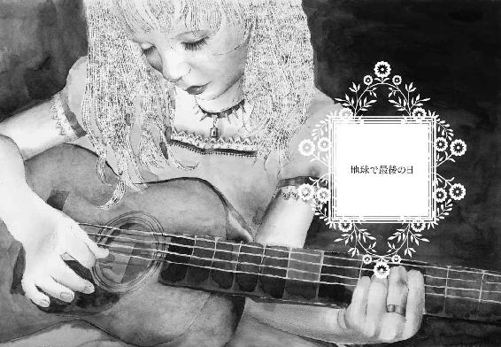

| 道徳という名の少年 | |
| 桜庭一樹 | |
| KADOKAWA / 角川書店 (2013) | |
道徳という名の少年
桜庭一樹

角川ｅ文庫
本作品の全部または一部を無断で複製、転載、配信、送信したり、ホームページ上に転載することを禁止します。また、本作品の内容を無断で改変、改ざん等を行うことも禁止します。
本作品購入時にご承諾いただいた規約により、有償・無償にかかわらず本作品を第三者に譲渡することはできません。
本作品を示すサムネイルなどのイメージ画像は、再ダウンロード時に予告なく変更される場合があります。
本作品は縦書きでレイアウトされています。
また、ご覧になるリーディングシステムにより、表示の差が認められることがあります。
町でいちばんの美女が父なし子を産み落としたのはこの国にはめずらしい雪の降る冬の夜のことで、雪など降ったのは数十年ぶりのことなのであまりの不吉さに教会の鐘が朝まで鳴りやまなかった。午前零時、白くつめたい不吉な粒々を連れて生まれてきたその赤子は真っ白で生クリームのように皮膚がてかてかしていて、町いちばんの美女が産み落としてすぐに覗きこむと股はつるりとしていた。女の赤子だとわかると町いちばんの美女は満足そうに形のよいちいさな鼻を鳴らした。老いたインディオの助産婦は平気そうだったが、部屋の壁際にずらりと並んで見物していた町の女たちは、敬虔なクリスチャンでもあり、美女の罪深さに心の底から恐れおののいていた。町いちばんの美女は父のいない女の赤子に、１、という名前をつけた。
これは始まりであり、まだまだ産むつもりであったのだ。
インディオの召使によって役場に届けられた赤子の名前、１、に恐れをなしたのは女たちだけでなく、秩序を愛するその町の、敬虔な男たちであった。誰の子なのか夜の噂が駆けめぐり仕事帰りに一杯飲むあいだにも互いに疑心暗鬼が続いていたが、女たちが次第に落ち着きを取りもどし赤子の育ちの心配をし始めても、男たちはまだおろおろとしていた。町いちばんの美女は父も母もなくしてインディオの召使が一人いるだけで、町の外れに建つちいさな家でぽつんと暮らしていたため、町の女たちはミルクを持ち、玉蜀黍粉の麵 を抱え、膝掛けや赤子用の布団を背負っては美女の家を訪れた。子供の頃、ともに学校に通った同い年の女たちがこの不道徳な美女にもっとも優しく接した。しかしそうしながらも、男たちも女たちも固唾を吞んではすこしずつ成長していく１のかんばせをみつめていた。
を抱え、膝掛けや赤子用の布団を背負っては美女の家を訪れた。子供の頃、ともに学校に通った同い年の女たちがこの不道徳な美女にもっとも優しく接した。しかしそうしながらも、男たちも女たちも固唾を吞んではすこしずつ成長していく１のかんばせをみつめていた。
顔には罪の刻印が──つまりは、父の面影が現れることと思ったのだ！
しかし１のかんばせは町いちばんの美女たる母にまるで生き写しで、奇妙なことに父の遺伝子はどこか悠久の彼方にかき消されたようだった。覗きこんでも覗きこんでも、１の顔は母のミニチュアにしか見えなかった。ある夜、町の女たちに頼まれたインディオの召使がおそるおそる「この子のお父さんはどなたです？」と聞くと、美女は身も世もなく悲しげに首を振り、漆黒の巻き毛を揺らして、
「死んだわ！」
とつぶやいた。たちまち噂は町を駆けめぐり、最近死んだのは誰だと人々は顔を見合わせた。この年の葬式といえば、百歳で死んだ前の町長ぐらいのもので、では町長の子なのかと町の人は脅えてささやきあった。というのは町長は善人だったのだ。善人がそんな不道徳な罪を？ なにかの間違いだろう、流れ者の仕業だろうと噂しあっているうちに美女の腹がまた膨れだした。１の父が死者であるなら、今度はべつの男の子供なのか？ 顔を見合わせ怖れているうちに２が生まれた。股はつるりとしていた。また女の赤子だった。
町の男たちは上目遣いにみつめあい、罪の刻印を互いの顔に探した。２もまた、母譲りの美貌をしており父親の遺伝子の気配はそのかんばせにちっとも見当たらなかった。インディオの召使に赤子の父について聞かれると、美女は黒い巻き毛を揺らして「あんまり若くて、言えないわ！」と言った。今度は町の学校が恐慌状態となった。罪深い不道徳な少年を探して噂が駆けめぐった。しかしほどなく美女はまた腹をふくらませて３を産み落とし、３もまた母にそっくりの女の赤子で、午前零時に生まれると勢いよく泣いてみせた。怖ろしいので町の人はもう、インディオの召使に父親について聞いてくれとは頼まなかった。秩序は壊れ始めていた。町外れの美女の家で三人の女の子が見守る中、やがて母の腹がまた膨らんで午前零時に末の妹が生まれた。町の人は聞くともなしに、町いちばんの美女の名づけ方に耳を澄ました。町いちばんの美女はまたもや己のかんばせにそっくりで父の遺伝子を隠したような赤子に、こんどは、悠久と名をつけた。明け方になり、その名が響きわたると教会の鐘が安堵したように三回、かすかに鳴った。この子が４ではないということは、おそらくもう５も６も生まれない。悠久とは、打ち止めという意味であろうと修道士はもっともらしくうなずき、日曜の昼間に演説した。
こうして四人の女の子はすくすくと育った。それぞれに父が違うという噂だったが、そうとはにわかに信じられないぐらい四人はそっくりだった。１は黒い巻き毛でもっとも大柄であり、２は黒髪がまっすぐで涼しげな美貌をしており、３はほっそりとして乳房だけがいやに大きく、悠久はどこか幼くかわゆい顔立ちをしていた。それぞれにすこしずつ個性を持ってはいたが、誰が誰だかわからなくなるぐらい佇まいも、からだの匂いも、似ていた。美女たる母は、しばらくして町にやってきた黄色い目をして瘦せこけた旅の商人と恋に落ち、四人を置いて町から出ていってしまった。子供だった１、２、３、悠久は困り果てたが、学校の帰り道、なんと、町の反対側の外れにあるオリエンタルな赤と黒の、宮殿を模した建物に四人で行進するように入っていってしまった。
宮殿は娼館であった。
なんという不道徳！
１はすこし大人になっていたが、２、３、と下るほど年が幼くなり、悠久はまだ子供だった。初めは１が稼いで妹たちを養ったが、大きくなるほどに、２も、３も娼婦となった。町の大人たちはあまりの不道徳に怖れて、昼は娼館に近づかなかった。１が娼婦となった日は冬の終わりで、季節外れの、この国にはめずらしい雪がすこし降った。２が娼婦となった日は夏の夕暮れで、上空で死んだ大量の虫が白い粉になり町中の道徳的な家庭の屋根に降りそそいだ。３の日は春で、遠い異国から贈られたチェリィの花びらが薄桃色に散っていた。悠久は娼婦になるのがいやで泣きわめいたが、姉たちにさとされて十五で客の前に立った。こうして四人が揃うと値段が跳ねあがり、町の男たちにはとても買えないほどの高価な花束となってしまった。なにしろ姉妹はすばらしい美女で、それに、顔がそっくりだったのだ。ちいさな町にはやってきたことがない、国の中央のお大尽が通ってきては、四輪の花を一気に買って、午前零時にくるくると回した。
どこかにいなくなった四姉妹の母がとつぜん町に帰ってきたのは、その頃のことだった。町いちばんの美女は町外れのもとの家に入り、旅の商人とのあいだに生まれたらしき四姉妹の弟を育て始めた。弟はなぜだか母にも、四人の姉にもちっとも似ていなかった。インディオの召使がもどってきて、夫たる商人の行方を聞くと美女は一言、
「死んだわ！」
噂は町を駆けめぐった。
美女はだいぶ年をとって、もはや美女ではなくなりかけていた。四人の娘たちが訪ねていき、１は母をなじり、２は涙を流して抱きしめ、３は困ったように頭をかいた。そして悠久は、まだほっそりと子供じみた弟の姿をみつけ、じっとみつめあった。うつくしい母とも四人の姉とも似つかぬ少年は、からだは瘦せこけ、顔は物悲しげで、それに父譲りのバターみたいに黄色い目玉をしていた。悠久は末っ子であった自分に弟ができたことを喜び、毎日、母のもとに通っては弟に高価な菓子をやったり、望まれるままに自分のおおきな乳房で遊ばせた。弟はうつくしい姉を慕い、かしずくようになった。女王であるかのように悠久を敬い、どこにでも、どこまでもついていった。
かつての町いちばんの美女は、うつくしくなり夜毎四人でくるくる回る娘たちに花の魂を吸い取られるように、町にもどってきてから急速に枯れた。以前は小食でミルクと花の蜜、すこしの玉蜀黍の麵を齧るだけであったのに、いまでは日がな一日、口に蜂蜜を流しこんでは溢れさせて体中をべたべたにしてしまい、肉の脂身を齧っては牝牛のようなゲップをした。またたくまに美貌はてかる脂の奥に消えてしまい、豊満だったからだがぶくぶくと太りだした。階段を降りられなくなり、歩けなくなり、ついにはベッドから降りるのもやっとの肉の塊になった。節々が痛いと泣くので弟が医者を呼びに行くと、医者はこの病に必要なのは真珠の粒を飲ませることだと諭した。真珠はこのころ一粒一粒が高価で、二十粒もあればちいさな家が建つぐらいの値段であった。四姉妹は夜毎、四輪で咲き誇りお大尽から金を巻きあげては、母に飲ませる真珠代を稼いだ。真珠の粒は口の中で転がすとつるりと冷たくて、そうすると悠久は官能的な気分になった。１は、あたしが生まれたときに降った雪の粒みたいだわとひとりごちた。しかし母の病気はひどくなる一方で、ベッドからはみだすほどの柔らかな肉の洪水となり、肉の真ん中から、半分埋もれた、かつて町でいちばんうつくしかった顔がのぞいていた。海で溺れているかのように、母の顔はいつも泣きそうにゆがんでいた。
母が肉に溺れるほどに、そっくりな四姉妹はなぜか個性を得た。１はお金が大好きで日がな稼ぐことばかり考えた。２は時間があれば本ばかり読んで、知識中毒者だった。３は夜遊びに休息をみつけて朝まで踊り明かした。そして悠久はというと、いつのまにか弟を激しく愛するようになっていた。母の病に押されるようにいつのまにか弟は大人になり、四姉妹の付人となっていた。悠久と弟の肉体は夜毎、二人きりになると花の蔦と蔦のようにからまりあって離れなかった。
母は毎晩、真珠を飲んだ。どんどんおおきく、柔らかくひろがっていった。
やがて悠久は身籠った。町の人は誰の子だろうと脅えたが、悠久にはもちろん子供の父が誰なのかよくわかっていた。弟は生まれてくる自分と姉との子供のために、松明を抱いて夜中に家に帰り、真珠を飲み干す母に短く別れを告げると部屋中に火をつけた。午前零時のことだった。肉の焼ける悲しい香ばしい匂いが立ちのぼり、家と一緒に母は結局燃えあがって死んでしまった。１、２、３、悠久は四人並んで、真夜中の暗闇に浮かびあがる、燃える我が家を見上げた。四人とも泣いていた。肉と脂の焦げる匂いは、過去の匂いだった。もう真珠代を稼がなくていいのだ。四輪咲いて、稼いだお金は、四人のものだ。
燃える家にめずらしく雪が降った。１が懐かしく自分の生まれた夜のことを思っているうちに家の周りにだけ魔法のように雪が降り積もり、ばちばちと燃えていた炎を消してびっしょりと湿らせていった。教会の鐘が激しく鳴り響き、どうしたことだろうと四人が振りかえると、修道士が金切り声で叫びだした。悔い改めよ──！ それは不道徳に生きてきた母と四姉妹への怒りと非難の鐘だった。明け方になり燃え残った家から母の骨や肉を拾っていると、炎に巻かれなかった古いラジオが悠久の足に蹴飛ばされて、するととつぜん、遠い国で戦争が始まったという悲しいニュースを流しだした。四人は顔を見合わせた。悠久は弟とのあいだにできた子供が宿る、自分の腹をそっと見下ろした。
戦禍はこのちいさな国にも影響を及ぼし、短い時間で嵐のように、四姉妹が暮らす町も通過していった。死んだ者、従軍して怖ろしい光景を見た者、たくさんの悪夢が町の善人たち、幸福な家庭の上をあっというまに通りすぎ、戦争は終結した。
四姉妹は母を焼き殺して自由になった。１はもっと大きな町で娼館を経営し、２は遠い外国に勉強しに旅立ち、３は都会で酒場の民謡歌手となった。悠久は町に残り、雑貨屋の向かいのちいさな家を借りて、弟の子供を産んだ。大人になった四姉妹の道は爆発するように四散したが、知識中毒者の２が書物で学んだ魔術を使い、なにかあると沼ネズミに宿って悠久の住む家の台所に魂だけが集結した。だから、悠久が弟の子供を産んだその夜、午前零時にも１、２、３の魂が宿った三匹の沼ネズミが台所から走りだしてきて、驚くインディオの助産婦を尻目に、生まれてきた赤子をキューキュー鳴きながら覗きこんだ。
股は、つるりとしていなかった。赤子は男の子だった。固く目を閉じ眠っていた。弟とはどこも似ておらず、母が四姉妹を産み落としたときのように、悠久にそっくりの薔薇のかんばせの子供だった。悠久にということは、町いちばんの美女だった母に、そして１に、２に、３に似ているということである。
「この子は、町いちばんの美丈夫になるわ」
悠久はつぶやいた。
悠久と沼ネズミに宿った姉たちは、四人でキューキューと相談をした。自分たちと母は、生涯、なにと戦ってきたのだろうか。それ、それ、それの、名前をこの子につけてやろうと言いあった。
それで四人は、生まれた男の子に、道徳という名をつけた。
その雑貨屋の娘には生まれつき父親がいなかった。日がな一日、雑貨屋の二階の窓辺で頰杖をついては、向かいのジャングリン坊やの家を眺めて過ごしていた。ジャングリン坊やは娘と同い年。町でいちばんうつくしい男の子で、いつもフリルが蝶の大群みたいにひらひらとする素敵なブラウスを着ていた。だけどよく見ると目玉だけはうつくしくないパパ譲りで、溶けたバターみたいに黄色がかっていた。町の女の子たちはみんなジャングリンのうつくしい顔立ちに憧れたけれど、雑貨屋の娘だけはそうではなくて、内心、パパ譲りのみっともない黄色い目をうらやましいと思っていた。
娘が日がな、眺めているジャングリンの家では、昼間はジャングリンもジャングリン・パパもじっと家の中にいた。日暮れになると父子で通りに出てきて玉蜀黍を投げあったり驢馬の子供をかわいがったりして遊んだ。そういうとき、ジャングリンはときどき幼なじみの雑貨屋の娘を「おぅい」と手を振って呼んだ。娘は喜んで雑貨屋から飛びだし、ジャングリン・パパの瘦せ細ってやけに長い腕にぶらさがって甘えた。ジャングリンは仲良しのこの娘をとても愛していたが、娘のほうはというと、ジャングリン・パパに甘える時間が一日の中でいちばん楽しく、カサカサした長い腕に頰ずりしてはうっとりしていた。そろって五歳になったある夕方、ジャングリンがうつくしい眉をひそめて、娘にささやいた。「ほしいものがあるかい？ 誕生日にほしいものをママに聞かれたけど、答えられなかったんだ」娘は貧しい雑貨屋で吝嗇な母親と二人で暮らしていて、誕生日に贈り物をされたことなどなかったので、目をぱちくりとして考えこんだ。娘もなにも思いつけなかった。だからことのほか真剣な声で、
「ジャングリン・パパの腕がほしいわ」
その答えにジャングリンはごく不思議そうな顔をした。それから同じぐらい真剣な顔をして娘をみつめ「仲良くしてくれたら、あげるよ」と約束した。二人はちいさな両手のひらを合わせて指をからませ、固い約束の儀式をした。
それにしても、黄色い目玉をしてひょろりと瘦せこけたジャングリン・パパと、どうして夫婦になったのか──ジャングリン・ママは、町いちばんの美女と言われた真っ赤な薔薇のかんばせを持っていた。若いころは姉たちと一緒に稼ぎに稼いだ売れっ子の娼婦で、国の中央からお大尽がわざわざ、このちいさな町まで通ってきたという噂だった。でも残念なことにいまではなぜかすごく太ってしまい、階段を降りることも歩くことも難しくなり、一日、二階の寝室にじいっとしていた。そのからだからはいつも古いチーズみたいなおかしな匂いが立ちのぼり、風の向きによっては雑貨屋の二階にまで届くほどだった。ジャングリン・パパはこの巨体となったママにかしずき、一日、食事をさせたり着替えさせたり風呂に入れたり、甲斐甲斐しく世話をし続けた。ママは息子とお揃いの、特大サイズのフリルのブラウスを着て、甲高い声でよく歌を歌っていた。沼ネズミがママになついて、ときどき台所から走りでてきてはキューキューと一緒に歌った。
町の大人たちの噂によると、ジャングリン・ママとパパはなんと本物の姉弟だということだった。雑貨屋の娘はちいさな頃から、母親が営む店で時折、売り物の波斯絨毯の陰に隠れては大人たちの噂に耳を傾けていた。血を分けたどうしで愛しあって結婚し、ジャングリンが生まれたという不穏な噂を娘はしかし、あまり信じなかった。なぜならジャングリン・パパとママは顔も姿もぜんぜん似ていなかったからだ。それに、不道徳な噂はもの静かで優しいジャングリン・パパにちっとも似合わないと思っていた。
やがて雑貨屋の娘とジャングリンはそろって学校に通う年齢になった。そうなると仲良しだった二人はすこしばかり疎遠になってしまった。というのはジャングリンがあまりにもうつくしかったので、女の子たちの憧憬の的となり、幼なじみの娘は嫉妬を受けて、傍に寄りにくくなってしまったのだ。学校の帰り道もべつべつで、そうなるとジャングリンは寂しがった。ジャングリンは幼なじみのこの娘をことのほか大切に思っていたのだ。だから夜になると、宿題を終え、星が柄杓の形に瞬き始めたのを合図に、二階の窓から顔を出し、歌うように節をつけて娘を呼んだ。
「おぅい。おぅい」
娘は二階の窓に頰杖をついて「あぁ、ジャングリン」と返事をした。二人は気の合うどうしだったので、窓越しに、大声でいつまでもおしゃべりをした。ジャングリンは溶けたバターみたいな黄色い目玉を見開いて、娘をじっとみつめていた。娘は話しながら、しかしじつのところジャングリンを見ていなかった。ジャングリンの背後にうっすらと浮かびあがる、ジャングリン・パパのシルエットに目をこらしていた。パパは壁際に立ち、影のようにじっと動かなかった。ジャングリンと通りで遊んだりしない年齢になってしまうと、雑貨屋の娘はもうパパの腕にぶらさがったり頰ずりしたりできなくなってしまった。娘はせんのないこととわかっていてもそれを悲しく思い、ほんのすこしだけジャングリンを恨んだ。
「仲良くしていたら、くれると言ったのに」
やがて、仲良しの二人は揃ってすくすくと成長し、十五歳になった。ジャングリンは上の学校に進級し、フリルのブラウスを風に戦がせながら、教科書の束を小脇に上級学校に通いだした。娘はというと、母親がからだを壊したので雑貨屋の跡を継ぎ、朝から晩まで働きづめの毎日になった。とはいえそれを苦痛に思うことはなかった。娘は働くのが性にあっていたし、そのことで早く大人の仲間入りを果たした気持ちになり、どこか誇らしさを感じていた。毎朝、雑貨屋の前を、フリルをなびかせたジャングリンが通りすぎる。「おはよう、ジャングリン」と笑いかけながら娘は、見送りに玄関に出てきたジャングリン・パパのほうをみつめていた。
遠くの、おおきな国がどうやら戦争を始めるらしいという不穏なニュースが伝わってきたのは、つぎの年の春のことだった。ラジオが血気盛んな子供のように、このちいさな国も参戦することになるかもしれぬと告げた。町の人たちがおどろいているうちに、ほんとうに戦争が始まってしまった。物資がとぼしくなるだろうと、娘は食品の仕入れを強化した。店で甲斐甲斐しく働いていると、ある朝、向かいのジャングリンの家から、ジャングリン・ママの長くて甲高い悲鳴が聞こえてきた。
二階の窓から投げだされた、赤い制服をきた少年──それは郵便配達夫の制服だった！──が、雑貨屋の前に落下して玉蜀黍粉だらけになり咳きこんだ。郵便配達夫は、遠くの国で始まった戦争の、兵士を集める通知を届けにきたのだ。町いちばんの美丈夫、ジャングリンのところにも通知を届け、怒り狂ったママに放りだされてしまったのだった。町中の、男の子がいる家に向かわなければならない郵便配達夫は、よろよろと起きあがって粉だらけの姿で自転車を引き、走り去っていった。ジャングリンの家からは、猛獣のように泣くママの声と、ジャングリンのなだめる声が聞こえてきた。雑貨屋の娘は二階の窓を見上げ、黙っていた。
「おぉ、おぉ、あたしの息子が死んでしまう。戦争で死んでしまう」
「死んだりしないさ。たとえどんな姿になっても、ママのもとに生きて還ってくる。約束するよ、ママ。泣かないで」
ジャングリン・ママの泣き声が響きわたると、雑貨屋の娘はたまらなくなって店の奥に逃げこんだ。その夜は泣き声が星座の瞬きを揺るがすほど響きつづけ、夜空が藍色に曇って涙のような雨がザァザァ、ザァザァと降りだした。やまない雨の中、やがて町の真ん中にある駅に蒸気機関車がやってきて、フリルのブラウスを脱いで黒い軍服に身を包んだ町いちばんの美丈夫、ジャングリンを乗せてしまった。その朝、見送りに出るために、巨体のジャングリン・ママはパパお手製の鉄製の巨大な車椅子に乗り、数年ぶりに家から出てきた。奇怪な黒い車椅子の上でジャングリン・ママは巨体を激しく震わせていた。パパが車椅子をキィキィと押していた。ジャングリンはママの額にキスをして、それから雑貨屋の娘のほうを、なにか言いたそうな悲しげな顔つきでみつめた。娘はパパの横顔をぼんやりと見ていて、気づかなかった。ジャングリンはあきらめたようにそのまま機関車に乗りこみ、そうしてあっというまに異国の戦場に運ばれていった。
ほどなく、ラジオから戦争の行方を告げるニュースがひっきりなしとなった。ラジオを持たない人々が雑貨屋に集っては、葡萄酒の古樽や木箱に座って耳をかたむけた。娘は彼らに茹でた玉蜀黍や麵の実のジュースを売った。初めは遠い国で始まったはずの戦争はこの国の真ん中を破壊し、トルネードのようにちいさな町にも近づきつつあった。やがて空襲が始まり、教会の鐘が狂ったように鳴りつづけた。修道士が塔の上から、避難せよ、外に出ずに神に祈れと、声を限りに叫んだ。町の人たちは地下の葡萄酒蔵で身を寄せあい、家族で励ましあって乗りこえたが、雑貨屋の娘は、このころ吝嗇の母親を病気でなくして独りぼっちになったところだったので、雑貨屋の隅にうずくまり、膝を抱えて不安に涙を流しながら、子供の頃にぶらさがったジャングリン・パパの腕のことを考えていた。それを思いだすと、なぜだか安心できた。通りの向かい側の家にジャングリン・パパがいると思い、カサカサと乾いて長いパパの腕を強く強く想像した。寂しさのあまり、夜が更けるとやがて幻の腕が空中に現れ、娘の頭を優しく撫でた。本物の父親のように。幻を見たことで怖さが和らぎ、娘の涙はぴたりと止まった。
ジャングリン・ママが死んだのは、三度目の空襲があった夜のことだった。というのは、ママは一人息子を心配するあまり短い時間で走り去るように狂ってしまい、群青色の夜空を敵機が爆音とともに飛び、通りや家々の壁に穴を開けていたそのとき、家を飛びだし「ジャングリーン！」と叫びながら通りを駆けたのだった。巨体を揺らし、数年ぶりにベッドも車椅子も降りてヨチヨチと走りだしたママは、敵機のおもしろい標的となってしまった。嘲笑うような爆音と断末魔の甲高い悲鳴が響き、悲鳴が途絶えてからも爆音は徒に繰りかえされた。やがて夜が明けかけて薄紫色の朝陽がさすころ、ジャングリン・ママの肉体は通りに四散して原形をもうとどめていなかった。古いチーズのような匂いが風に乗って町にひろがるばかりだった。町の人たちは息を潜めて家に隠れ、出てこなかったが、雑貨屋の娘だけがおそるおそるドアを開け、外に足を踏みだした。するとジャングリン・パパが地面を這いずり、飛び散った妻を一心に拾い集めているところだった。肉や、内臓や、脂肪の欠片、それに長い黒髪のからまった頭蓋骨。長くて瘦せ細った腕で拾いつづけ、狂ったママの血で手もからだも衣服も真っ赤っ赤に染まっていた。雑貨屋の娘はたまらなくなってパパに駆けより、死体を拾うのを手伝った。パパはそれに気づくと、息子の幼なじみの優しい顔に、すこしだけ微笑みかけた。溶けたバターのような目は、いまは冷えて黄色く凝固していた。「ありがとう」と言われて娘はいいの、と首を振った。しかし地面を這いずり、飛び散った妻の肉体を拾い集める夫はやがて、手の中に残ったからまった黒髪と脂じみた血を見下ろしてちいさく、つぶやいた。
「姉さァん──！」
その声に、雑貨屋の娘はアッと叫んで硬直した。幼いころに聞いた噂はほんとうだったのだろうか。ジャングリン・パパとママは血を分けた姉弟......。
娘はおどろき、その背徳に麻酔を打たれたように、それきり一言も言葉を発せなくなってしまった。それから毎日、雑貨屋でも黙ったままで物を売り、仕入れ、唇を固く引きむすんでは、怖れるようにときどきジャングリンの家を見上げた。
それから二年が経って、戦争は始まったときのようにとつぜん終わった。海の向こうの国に新しい怖ろしい爆弾が落ちたとラジオが告げたけれど、詳しいことはよくわからなかった。遠い国に従軍していた少年たちが、ある者は命を落とし、しかしほとんどのものは無事に帰還した。町の真ん中にある駅に蒸気機関車が着き、そのたびに少年たちがわらわらと降りてきては待っていた家族や恋人の胸に飛びこんだ。ジャングリン・パパも息子を迎えに出かけようとして、ふと思いたって雑貨屋のドアを叩いた。口が利けないまま静かに暮らす娘が出てきてヒョイと首をかしげたので、パパは言葉少なに、一緒にジャングリンを迎えに行かないか、あんたと息子は大の仲良しだったから、と言った。娘はうれしそうにうなずいて、雑貨屋を出るとパパと一緒に歩きだした。おずおずと、ジャングリン・パパの手に自分の手をからめ、おっかなびっくり手をつないだ。娘の足取りはたちまち弾んだ。二人は仲良く駅に着いた。
あのとき約束したように、ジャングリンは生きて帰ってきた。パパとそっくりな黄色い目玉も、ママに生き写しの薔薇のかんばせも健在だった。機関車が止まると、しかし、娘もパパもそれに気づいた。
もどってきたジャングリンには、腕がなかった。
爆発で両腕が吹き飛ばされ、軍服の袖はからっぽで煙たい風に軽々とはためいていた。腕のないジャングリンは、なんだかおかしな様子だった。からだのバランスがうまくとれなくて、二人に声をかけようとして機関車から転がり落ち、前のめりに転んだ。それから、駅を出て家につくまでに何度も転んでは、百足のように無様に地べたを這いずった。町中の人がそのみっともない姿を見ていた。好奇と同情の入り混じった、冷えた静寂──！ ジャングリン・パパはなんにも言わなかった。ただ息子に腕を差しだして助け起こしては、また歩きつづけた。二人はゆっくりと道を進んだ。悄然として後ろからついていく雑貨屋の娘は、そのほっそりとした父子の後ろ姿から、ゴルゴタの丘を登る人のような奇妙な静けさを感じていた。
ようやく家に着くと、ジャングリン・パパは息子の血塗られた黒い軍服を脱がせ、贅沢な花の蜜の風呂に入れた。それから丁寧に髪を梳き、新しいフリルのブラウスを着せて入念におめかしをさせた。その姿を見た町の人たちは、もしや、パパもすこし狂ったのではないかと怖ろしがり小声で噂をした。ジャングリンはママの死を知って麻酔を打たれたように静かになり、一週間ほど、おめかしさせられた姿で窓辺に座ったまま蠟人形の如くぴくりとも動かなかった。髪に小鳥が止まっても、背中に黒い羽のように蛾蜻蛉が集っても、反応をしなかった。やがてパパから、雑貨屋の娘がママを拾い集めるのを手伝ったと聞くとふいに覚醒し、窓辺で子供の頃のように娘を呼んだ。「おぅい。おぅい」娘が顔を出すと、「ありがとう」と微笑んだ。娘はその笑顔に、すこしばかりおどろいた。ジャングリンのその顔には、以前はけしてなかった弱者の笑みがはりついていた。
蝶の大群のような白いブラウスが、ただ風にやわらかく揺れていた。
それからジャングリンは、ジャングリン・パパの助けでなんとか日々をこなすようになった。パパは息子の背後に回り、息子の背中に自分の胸をぴったりとくっつけ、自分の腕が息子の物であるかのように操っては、風呂に入れてやり、食事をとらせ、着替えをさせた。その昔、ママにかしずいていたときのように今度は薔薇のかんばせを持つ息子にかしずき日々を過ごした。しかしそうすると瘦せ細ったジャングリン・パパはまるで初めから、腕以外はないかのようにうつくしい息子の背後に溶け消えていなくなってしまった。存在感が煙のように消えていき、いつしか町の誰もパパを気にしなくなっていった。息子のジャングリンと雑貨屋の娘以外は、瘦せたジャングリン・パパのことをちっとも思いださないのだった。
戦争が終わったつぎの年、雑貨屋の娘とジャングリンは結婚することになった。この年、二人は揃って十九歳になっていた。ジャングリンは両腕がないから働くことが難しく、一方娘は商売のおかげでささやかだが自活ができていた。うつくしく気立てもよいが、両腕のないジャングリンを娘の婿にと願う親は町に一人もおらず、娘たちもただ啞然として腕のない美丈夫をみつめるばかりで、誰一人、彼をほしがらなかった。嫉妬も羨望ももうなく、腕なしジャングリンは、幼なじみの雑貨屋の娘と所帯を持つのがいちばんよいという雰囲気になったのだった。娘はあれきり口が利けないままだったのでどう考えているのか誰にもわからなかったが、ジャングリンと──つまりパパが背中に張りついている息子と──一緒にいるときは、子供の頃と同じように楽しげだったし、ジャングリンは欠損に負い目を感じながらも、昔からよくよく愛していた娘と一緒になれて喜んでいるように見えた。そんなわけで、二人は雑貨屋の二階に所帯を持った。昼間は娘が働き、ジャングリンはいままでどおり向かいの家にいて、影のようにかしずくパパに世話をされていた。そして夜になると無様に転びながら一生懸命歩いて通りを横切り、雑貨屋の二階に上がってきた。口が利けなくなった娘に、ジャングリンは夜毎、工夫をしては異国の楽しい話を聞かせた。娘はにこにこして聞いていた。二人はどこから見ても仲の良い若夫婦だった。夫の両腕がないことをのぞいては。
──夜が更けるとそれがやってきた。
町の人たちは誰もそのことを知らなかった。
半透明に存在が消えつつあるジャングリン・パパは、星座の柄杓がすこしかたむく時間になると音もなく通りを横切り、雑貨屋の二階に上がってきた。パパが若い夫婦のベッドに滑りこむと、ジャングリンは微笑み、愛する娘の唇にキスをした。娘は目を閉じ、ジャングリンの熱い胸にからだを預けた。そして二人が情熱的に抱きあえば、ジャングリンのからだに、ないはずの腕が夜の悪夢のようにたちまち生えるのだった。その腕は、若々しく輝くジャングリンの玉の肌とは別人の如く、カサカサと乾いて瘦せ細っていた。皺の多い指は長く、爪も割れて白濁していた。二の腕は瘦せ、皮膚がだぶついて幾本もの長い皺がのび、おおきな赤黒い染みが幾つも浮いていた。息子の背中に胸をぴったりとつけたパパが、腕をのばし、雑貨屋の娘の寝巻を撫でた。釦を一つ、一つ、ゆっくりと外していき、裸にした。娘の乳房はおおきくて、若くて張りがあり、鳥肌を立てて愛撫の手をいまかいまかと待っていた。パパの手のひらが乳房を撫でさすると、娘はうれしそうに瞳を潤ませた。おおきな乳房はやわらかく潰され、つかまれると熱く汗ばんでいった。
腕が自在に動き、ジャングリンのフリルのブラウスを脱がせ、ズボンも下着も脱がせて裸にすると、ジャングリンは猛っていて、ジャングリンのそこを窓からの青白い月明かりが憐れむようにてらてらと照らした。ママ譲りの薔薇のかんばせは欲望に歪み、そうするとすこしばかり悲しそうにも見えた。ジャングリンの顔の向こうに、皺と染みの浮かんだ、古びた男の顔が亡霊のように浮かんでいた。雑貨屋の娘はそれを、うれしさと痛みの入り混じった顔つきをして夜毎、見上げた。
ジャングリンとジャングリン・パパはおどろくほど似ていない。
うつくしい息子と乾いた父。
だけど、同じ、溶けたバターのような黄色い目。
夜ともなれば、同じ欲望に濁り、とろとろと溶けていくばかり。
重なった父子が、裸の娘に覆いかぶさった。息子のあたたかな唇が娘のそこここを情熱的に舐めまわすと、同時に父の乾いた腕がカサカサと枯葉のような愛撫をした。ジャングリンの唇と、ジャングリン・パパの愛撫の手。いるけど、いない、老いた男の手に喜んで、雑貨屋の娘は何度もおおきな声を上げ、粗末なベッドの上で青い魚のように跳ねまわった。昼は口が利けないまま、夜になるとあまやかな吐息を漏らすのだった。娘が声を上げると、父子は同時に動きを止め、ぎょろりと目玉を剝きだして娘を覗きこんだ。よく似た四つの黄色い目玉から、欲望のやわらかなバターが娘の唇に、とろとろと溶けては流れこむ。バターの夜だ！ 娘はさらに激しく声を上げ、ベッドの上で跳ねては、ジャングリン・パパの乾いた腕にからみついて熱い舌を這わせた。
やがてパパの腕が娘の両足首をつかむと、おおきく左右に開く。それから、息子のそれに優しく両手を添える。ジャングリンは気持ちがよいのか不愉快なのか、そのときだけ泣きそうに唇を震わせる。おおきくため息をついて、二人の男は息を合わせ、娘に向かって腰を沈める。娘は目を見開いて、自分に覆いかぶさる二つの重たいからだと、動きに合わせてゆっくりと揺れる二つの顔を、見上げる。バターの夜だ！ ジャングリンは苦しげに眉間に皺を寄せ、目を閉じているけれど、ジャングリン・パパは黄色い目玉を見開き、娘の顔をじっとみつめていた。ジャングリンの閉じた目から、熱いバターがとろとろと溶けだし、パパの開いた目からはどっと溢れだしていた。娘は、大好きなジャングリン・パパとみつめあう。するとパパはかすかに微笑んだ。
こうしてジャングリンと、雑貨屋の娘と、ジャングリン・パパの愛撫の手は、昼はべつべつにおり、夜になると秘密の、不道徳な、薔薇のような生活を送った。時が経つほどにジャングリン・パパの気配はますます消え、昼のあいだはもういるのかいないのかほとんどわからぬほどだった。ジャングリンも、背中に張りついたパパが繰りだす乾いて老いた腕が、あまりにも自分の意志のままに動くので自分なのか自分ではないのかよくわからなくなっていった。こうしてパパの姿はかき消えていきまるで腕だけがそこに在るようだった。その腕に愛撫される夜のことだけを娘は次第に考えるようになった。昼のあいだも、パパを思うと自然としっとりした。娘もまた、自分はジャングリンと夫婦なのか、ジャングリン・パパを手に入れたのかよくわからなくなっていった。
そうして五年が経ってとつぜん、消えかけていたジャングリン・パパの姿がくっきりと可視できるようになった。異変に気づき、娘はあわてて医者を呼びに走った。口が利けないので医者の手を引いて連れてきて、診察させると、パパは肉体の奥が死の病に冒されていてもう長くないということだった。娘とジャングリンは嘆き悲しみ、昼も夜も、ようやく姿を現したパパの看病に明け暮れた。ところがそのうち、ジャングリンは両足を使って器用に自分の面倒を見ることを覚えた。ほっそりとしなやかなジャングリンの二本の足は、ジャングリン・パパの乾いた腕のように自在に動きだした。足は時には、ジャングリン自身の意志に反して勝手に自分の世話をし、夜になると欲望のまま娘の乳房を激しく揉みしだいて愛撫した。まるで足にパパが宿ったようだ、とジャングリンが思っているうちに、パパの容態は刻々と悪化し、ある夜、ついに眠るように死んでしまった。若夫婦は身も世もなく悲しんで、町の外れにある墓地にパパを埋葬した。ママと、パパとママの母親の墓が並び、朝露に濡れていた。その隣にパパを埋葬し、歩きだしたところで娘は、パパの幽霊がついてきていることに気づいた。不思議なことに血を分けた息子であるジャングリンの目にはそれが見えなくて、娘がいくら指さして、パパがいるわと身振りで伝えようとしても首をかしげるばかりだった。逢いたいばかりに幻を見ているのかと娘は疑った。あの遠い空襲の夜、生みだした幻の腕のようにだ。とろとろと溶けるバターのような黄色い目をして、パパは娘の顔ばかりみつめていた。通りを歩き、ママが「ジャングリーン！」と飛び散って死んだ場所につくと、パパの幽霊は悲しそうに一度首を振った。若夫婦が雑貨屋の二階に続く階段を上り始めても、幽霊はまだついてきたが、墓地を離れるごとに黒く濃かった影は水を足したようにすこしずつ薄まっていった。消えてしまうのかしら、と娘は悲しくなった。ジャングリンは部屋に入ると、唇と両足を使って器用に娘の服を脱がし、裸にした娘の豊満なからだに覆いかぶさり、しなやかな両足で力強く愛撫をした。娘は声を上げながらも、部屋の隅にぼうっと立ち尽くしているジャングリン・パパの幽霊から目を離すことができなかった。懇願するようにみつめる娘に、困ったように、パパの幽霊は床を滑って近づいてきて、瘦せ細った腕で娘の乳房をかすった。消えかけたその腕は肌に触れることができず、なんの感触もなかった。代わりにジャングリンの足が、意志に反して巧みに動いて娘の乳房をつかみ、撫でさすった。パパは悲しげな顔をして娘を覗きこんでいた。ジャングリンが娘の耳たぶをかんで「愛してるよ。ずっと昔からだ。子供の頃から、愛していた」とささやくと、ふいに、もう何年ものあいだ口が利けなかった娘の喉から、おおきな、低い声がほとばしりでた。
「愛してるわ！ ずっと昔から......。子供の頃から、愛していたわ！」
その声を聞くと、薄まりゆくジャングリン・パパの幽霊は娘を嘲笑うようにかすかに揺れた。そうしてバターのようにとろりとして、闇の奥に消えてしまった。
孤独な人間というものは、得てして、道徳を軽視するものだ。国いちばんの歌手、ジャングリーナさんもまたそうだった。彼（──もしくは、彼女と呼べばいいのか？）は子供の頃からずっと、この世の掟なんて屁とも思わず生きてきた。虫を殺し、兎を殺しては、死体を片手に、変声期前の澄んだ声で歌いながら通りを練り歩いた。町の大人たちはそのうつくしい声に聴きほれたが、子供たちはというと、すこし年上の子であっても、ジャングリーナさんをいないものとして、目も合わせず過ごした。遊びの仲間に入れることはけっしてなかった。
子供の頃のジャングリーナさんの家は、父一人子一人の静かなもので、一階はちいさな雑貨屋、二階が住居になっていた。もとは母親がやっていた店だった。父親は若い頃に従軍した戦争で両腕を吹き飛ばされてなくしていたが、慣れたもので、足だけで器用に雑貨屋の仕事をこなしていた。父親がいうには、母親はジャングリーナさんを産んでまもなく、「腕しかないお化けがやってきて、この世からすくいあげるようにして」どこかに連れていってしまったのだった。それきり母はどこにもおらず、母とは優しい生き物だという幻想だけが、息子の胸に残された。そういうわけで、ジャングリーナさんは腕なしの父親によって育てられたが、心の底でずっと、腕のお化けが母を連れ去ったという、父の話を疑っていた。父が、母を殺したのではないか、それでこの雑貨屋の床下にでも埋めてあるのではないかと夢想しては、暗い興奮を覚えてくつくつと笑った。
ジャングリーナさんの父は、昼はちいさな雑貨屋を開き、夜になると、息子のジャングリーナさんを足で強く抱いた。妻が着ていたネグリジェを着せて、妻の名前を呼んでは強く手繰りよせ、涙を流しながら眠ってしまうのだった。父の目玉は溶けたバターのように黄色くて、このちいさな町には珍しく、端整な、いっそうつくしいといってもよい顔立ちの中で、目玉だけが奇妙に浮きあがっていた。一人息子のジャングリーナさんも、父親譲りの、黄色い目玉。顔立ちは父よりも整って、十五になる頃には、絶世の美少年といってもよい面立ちとなった。十五になっても、十六になっても、ジャングリーナさんは夜になるとネグリジェを着せられ父に抱きしめられて眠り、夜が明けると外に出て、虫や兎を殺してまわった。そうして十七になると、寝ている父を絞め殺して、雑貨屋の床下深くに埋めてしまい、父の唾液にまみれたふるいネグリジェを乱暴に脱ぎ捨てた。薔薇のかんばせを生かしてヒッチハイクをして、ちいさな町からあっというまに、国いちばんの都会に出た。
うつくしいが、奇怪な黄色い目をして、すこしなよなよとしたジャングリーナさん。女物のフリルのドレスを着て、戦争のとき若き父が履いたような無骨なブーツに、巨大な機関銃を背負った、奇妙な扮装で歌いだした途端に、若者の人気を得た。海の向こうのおおきな国で流行り始めた、新しい若者文化、自由と堕落を奏でる音楽を自在に取りいれて、あっというまにこのちいさな国の人気歌手になった。ようするに、殺す代わりに、歌うことにしたのだった。フリルのマンズドレスに身を包んで、悲しい声で叫ぶように歌うと、少女たちは熱狂しステージに駆けあがろうとした。興奮して失神するものまでいた。貴公子のようで、貴婦人のようで、それなのに同時に化け物のようでもある、気味の悪いスーパースター、ジャングリーナさん。歌うたびに、おおきなノドボトケがぐわぐわと動いて、そこだけが老人のような皺を浮きあがらせた。
ジャングリーナさんの泊まるホテルには毎夜、少女たちがつめかけたが、彼は一度たりとも、ドアを開けて少女を招きいれることはなかった。豪奢な部屋で、秘密につくった、つめたいプラスチックの恋人を抱いて眠るばかりだった。その恋人はほんとうにプラスチックでできた、実寸大の人間を模した玩具で、色はというと全身が金色に塗られていた。男とも女ともつかぬその人形を強く抱いては、震えて眠りに落ちるのだった。そうして夢の中でジャングリーナさんは夜毎、冒険をした。今ではない時間、ここではない何処かへ、ジャングリーナさんは常にいきたがった。近未来の夢は希望に満ちていて、彼自身の知る現実とはまるで、ちがった。天国のような未来。それが、どこか、外国の町であるのは確かだった。おおきな四角いビルディングが乱立し、いかにも自由気ままに、色とりどりの衣服を着こなす若者が溢れていた。彼らは一様に小柄で、ずいぶんと瘦せていた。それに皮膚が奇妙に黄色くって、ジャングリーナさんは自分の目玉と似たその色にすこしだけ親近感を得た。彼らは髪も瞳も、闇夜のような漆黒だった。ビルをミニチュアにしたような、四角いプラスチックの道具を片手にして、親指でせわしなく押している若者が多くいた。──いったい、いつだ？ 何処の夢だ？ 彼らが持っているちいさなビルはなんなのだ？ ジャングリーナさんは夢の中で、幸福な未来の異国を、夢中になって歩きまわった。金色に輝く、プラスチックの恋人とともに。二人で買い物をし、カフェでお茶をし、恋する瞳でみつめあった。その世界でのジャングリーナさんは、なんにも殺さなかった。虫も。兎も。父も。殺す必要も、歌う必要も、初めからあらかじめ、ないのだった。しかし、朝方、目覚めると彼は一人きり、孤独で、つめたいホテルの部屋にいた。窓から外を見ると、昔の戦禍のために壊れたビルや、古く薄暗い町並みが茫漠と広がっていた。ホテルの外には彼に恋する少女たちが、今宵も徹夜で、奇跡が起きてスーパースターが部屋に入れてくれまいかと待ちつづけていた。奇跡など起きない！ ジャングリーナさんはそんなとき、ただギターを片手に、ポロポロ、ポロポロと弾きながら、新しい曲をつくるのだった。
ぼくのパパは 戦争にいった
ママは パパがなくした腕に攫われた
パパは毎夜 ママの名を呼び 足でぼくを抱く
大人になったぼくの恋人は、なんとプラスチック製
もう この国に 戦争はない
町はいま瓦礫の山！
金色の 哀れな夢ん中
両性具有の未来を 君と生きるのだ！
デビュー曲「プラスチックの恋人」はヒットチャートを駆けあがり、いまでは国中の若者がこの歌を知っていた。その曲はこの国の今と、すこし未来を歌っていたのだった。ジャングリーナさんはアルバム作りのために、夜毎、ポロポロ、ポロポロとギターを弾いた。金色のプラスチックの恋人とともに眠っては、見る、あの麗しき近未来の夢を歌に捕らえようとした。ある夜、勇敢にもホテルに忍びこみ、部屋にやってきた十代半ばの少女を、ジャングリーナさんは気まぐれに抱いてみたが、その後、虫や兎を殺すように簡単に、片腕でひねり殺した。少女は驚いたように目を見開いていたが、首を絞められるとうっとりとして、「......好きよ！」とつぶやき、つまらない虫のように事切れた。フリルのマンズドレスに身を包んだジャングリーナさんは両性具有の美を持っていたが、腕の力はまごうことなく、ただの大人の男のそれだった。ベッドに転がる、青白い、生身の死体を見ながら、ジャングリーナさんはアルバムの最後の曲を作りあげた。金色に輝く恋人と近未来の異国を闊歩する、両性具有の若者を主人公とする、一つのストーリーを持ったアルバムができあがった。幸福で夢のような未来世界のイメージが、瓦礫の残るちいさな国に、若者にだけ幻視できる幻の野火の如くひろがった。ヒットチャートを駆けあがり、ジャングリーナさんの歌は、歌は、歌だけは、自由を得てどこまでもどこまでも空高く飛んでいった。ベッドにはプラスチック製のもの言わぬ恋人と、容赦なく朽ちていく、見知らぬ少女の生身の死体。地上に縛りつけられたスーパースターで、殺人者、ジャングリーナさんを置いてきぼりに、アルバム「道徳の奴隷」は世界中のラジオで熱狂的に流された。異国の若者たちもラジカセを囲んで、歌を聴いては踊った。さぁ、つぎのアルバムをつくらなくてはならない！ レコード会社は腐っていく少女の死体をみつけるとさっさと始末し、部屋を移して、新曲作りを促した。商業主義は千里を駆ける。ジャングリーナさんは血塗られた己の手のひらを幻視し、笑い、むせび泣いた。そうしてまた、殺すことも、犯すこともなく、できることといったらせいぜいちょっとしたものを盗むぐらいの、世にはびこる善人ども、幸福な羊のようなくだらない人生、己の敵たる、いわゆる、糞ったれの道徳の奴隷どもをあざ笑うように、歌い続けた。血を吐くように。助けを求めるように。死にたがるように。歌うたび、黄色い目玉からバターのような涙がぽたぽたとたれ落ちるようになった。もはや父の足はなく、何者も、彼（いや、彼女か？）を抱きしめることはなかった。歌うほど、スーパースターは孤独になっていった。恋人のプラスチックの肌は、殺した少女の血と液にまみれ、金色と暗い赤が混ざり、夜毎ジャングリーナさんに強く抱かれて、あちこちに無残なひびが入り始めていた。孤独は加速した。〝死〟は、父の姿をしてすぐそこに立ち、哀れな息子がついに歌い終わる日を、黄色い目玉を見開いてじっと待っていた。

ジャンはいま戦場にいて、尻ポケットに書きかけのラヴ・レターが入っていた。ジャンはいま十六歳。ハイスクールの生徒だったが、世界でいちばんおおきな国との戦争が始まってしまって、気づいたら大人の男たちと一緒にこうして戦場にいたのだった。自動小銃は重かった。ヘルメットも重かった。なにもかも重くって、現実の重さなのか悪夢の重さなのかわからないほど、とにかく重かった。重いといえば、ジャンの父はそのちいさな国では有名なロック・スターだったのだが、遅くにできた一人息子がこの年になる頃には、ぶくぶくと醜く太る病にかかっており、からだ中が重くて、歌手のくせにもうワンフレーズだって歌えやしなかった。口を開けば、げっぷが出るか、病に効くと信じて飲みつづける、まっしろな真珠の粒が溢れでるだけだった。
元スーパースターである父はもちろん、息子が兵士にならなくてすむよう政府に嘆願することだってできたが、心もからだも椅子から立ちあがれないほど重いので、もはや息子のためにはなにひとつしようとしなかった。ジャンは生まれつき、若い頃の父に似た薔薇のかんばせを持っていたが、まだ十六歳で、それに先日まで通っていたハイスクールの教室には、男ばっかり。女の子を好きになった経験は一度もなかったが、毎日、熱に浮かされたようにラヴ・レターばかり書いていた。従軍するのはべつにいやじゃなかった。ジャンの祖父が若者だった頃にも、世界中を巻きこんだおおきな戦争があった。祖父は両腕を吹き飛ばされたおそろしい姿になって、戦場から帰還した。ジャンはその悲しい昔話を聞くのが好きだったし、不幸になるのもいやじゃなく、戦争に行くのも平気だと思っていた。ただ、尻ポケットに入れた、もう何日も何箇月も書きかけのままのラヴ・レターのことだけが気になっていた。そのラヴ・レターには宛先がなかったが、この世のものとも思われないぐらいうつくしい、愛の、愛の言葉で埋め尽くされていた。ジャンは女の子を好きになった経験は一度だってないが、ただ、人を愛する崇高な気持ちなら、誰よりよく知っているはずだった。それは、たとえば、夜中に鏡を見ながら、うつくしい己の顔にこっそりとみとれる、そのときの思いに似ていると思った。ジャンは父に似て繊細で感じやすい質で、大人になったら歌手か、詩人になりたいと夢見ていた。うつくしいラヴ・レターは、芸術家の卵たる彼にとって、いわば最初の、作品だったのだ。
自動小銃は重かった。ヘルメットも重かった。戦争は知らないあいだにひどい形で進んでいて、十六歳のジャンはいきなり最前線に立たされていた。現実は重かった。悪夢のように重かった。尻ポケットの、あまやかなラヴ・レターのことを考えながらジャンは大人の兵士たちの後に雄々しく続いた。ひゅん、ひゅん、と銀色の弾丸が飛ぶ。ジャンはふいに、自分はこの戦場で死んでしまうのかもしれないと気づいた。彼は若すぎて、死ぬことがまだ怖くなかったけれど、ラヴ・レターのことだけが涙がにじむほど気がかりだった。そのとき乾いた音が響き、ジャンの胸にぷすぷすっと音を立てて二つのちいさな穴が開いた。あぁっ、ほんとうに、こんなに唐突に、ぼくは死ぬのだ。ジャンは痛みと驚きにのけぞった。まるで歌えなくなった父の病のように、急にからだの重さが増した。すると、ふいに、視界が魔的にひらけた。いまこの瞬間にも、世界のどこかにジャンのような少年が無数にいて、みんなして、彼のラヴ・レターの続きを書こうとしているのがわかった。ジャンはもうすぐ死ぬ。ほんとうは歌手になるはずだったが。もしくは、詩人になるはずだったが。誰の心にもかつてあった、鏡を見ながら感じるような、誰かを愛してるような、この世の秘密すべてを知ってるような、若くて寂しい、この気持ち。これはきっとすべての少年のもので、ジャンの肉体がたったいま戦場で血を噴いて死んで、尻ポケットの書きかけのラヴ・レターが誰にも発見されることなく朽ちても、魂は、魂は不滅であり、ジャンに似たべつの少年が歌いだすのだろう。ほんとうはジャンが歌うはずだった歌を。概念の歌を。まだ誰も愛したことはないが、確かに知っている、不滅の、不滅の、愛なるものの歌を。そう信じさせてくれ、あぁ、歌ってくれ、どこかの国の、ぼくのような少年よ、ぼくの代わりに、声を限りに歌ってくれ、と祈りながら、ジャンは戦場で仰向けに倒れて、死んだ。

ミミとクリステルは十六歳になったばかりで、揃って、いわゆる不機嫌なティーンエイジャーというやつだった。ハイスクールの帰り道、一面の玉蜀黍畑は見事な黄緑色に染まっていて、どこか遠くの町に向かう飛行機が、二人の頭上を轟音を立てて通りすぎた。「楽しいことなんて、ないわね」「ないわね」「ほんとよ」「いやになる」二人は仲良しで、飽きることなくおしゃべりをし、教会の尖塔に夕日が燃えるように落ちかかるころ家路について、今日も退屈だったとため息をつく日々だった。ミミはちぢれた赤毛に、バターみたいな黄色い目をした不器量な娘で、クリステルは瞳も髪も茶色くて、全身が濡れたように輝いていた。
「ねぇ。昔、曾おばあちゃんから聞いたんだけどね」ある日ミミが、なにもかもつまらないと言いたげな不機嫌な顔のままで、言った。「いま病気で死にかけてる、ジャングリーナさんっているでしょ。新聞に載ってた。あの人、あたしの親戚なんだって。曾々おばあちゃんの妹の、孫なの」「まさか！ そんなことあるわけないじゃない」クリステルは口を尖らせて返事をした。ジャングリーナさんは、このちいさな国でかつてもっとも有名だった、老いたる元ロック・スターだった。その昔、この国を襲った幾度目かの戦渦の後、フリルのマンズドレスに身を包んで背中に自動小銃を背負った姿で登場した青年歌手で、堕落と不道徳を歌う激しい姿に、当時の若者は熱狂したのだった。とはいえ、それはずいぶんと昔の話だった。ジャングリーナさんは老いて、歌わなくなって久しかったし、イエロージャーナリズムを信じるなら、いまでは別人の如く醜く太り、屋敷から出ることはおろかベッドから降りるのも一苦労のありさまとのことだった。
ミミもクリステルも、かつてのスーパースターなどというものには興味がなかった。若者は常に未来を夢見る。新しい言葉、新しいメロディーに飢えた、ちいさくてみっともない獣だ。一冊の音楽雑誌を友達みんなで回し読みしては、それが命に関わる重大事であるかのように、新しい刺激を探した。古いものになんて、見向きもしなかった。日々、年を取っていくのに、わざわざ後ろを振りかえるなんて、ばかげてる。だからミミが、曾祖母から聞いたほんとうかどうかわからない逸話を大事に考えたのは、ただ単に、それがすごぅくドラマチックに思えたからだった。ミミとクリステルは平凡なティーンエイジャーで、人生においてなにかの当事者になった経験が、いちどもなかったのだ。ちいさくてみっともない二匹の獣は、いまだ、大人たちが作った広大な世界の、ささいな観客に過ぎなかった。ミミはクリステルの醒めた答えにがっかりしたが、それでも熱に浮かされたように、あたしとジャングリーナさんは親戚かもしれない、と繰りかえした。「あんたとあのロック・スターはまるで似てないわよ。それに、こんな田舎町にいるくせに、そんなことあるはずないじゃないの。あっちは、死んだら新聞に載るようなすごい有名人なんだから」「だけど......見てよ、あたしの目。バターみたいに黄色いでしょ」ミミはあきらめきれずに、自分の細い目を指差した。
クリステルは、フリルのドレスを着たジャングリーナさんの、両性具有の美を誇る昔のポスターを思いだし、首をかしげた。ロック・スターはかつてこの世のものとも思われないぐらいうつくしい男だったが、そういえば確かに目だけは、溶けたバターのように濁った妙な黄色だった。クリステルは親友の目をまじまじと覗きこんだ。次第に、興奮が伝染してきた。ほんとうに、この親友が、そして田舎町でつるんでいるだけの自分たちが、新聞に載るようなすごいことと関わりがあるのかもしれないなんて！ クリステルは「確かめにいきましょ」と言いだした。ミミは尻込みしたけれど、二人のあいだをキャッチボールのように興奮が行ったりきたりするうち、たちまち増幅していった。ミミは「おじいちゃまに会ってきます」と、クリステルは「捜さないでください」と、それぞれ書置きを残して、玉蜀黍粉の麵とガムとミネラルウォーター、化粧道具に携帯型音楽端末だけ持って、家を出た。手を繫いで国道まで歩いていくと、都会から旅行にきた男たちのおんぼろキャデラックを、二本の右手親指でなんなくヒッチハイクして、あっというまに、田舎町からいなくなってしまった。
時代は移り変わっていた。その昔、ジャングリーナさんが歌いだしたころは、戦争の爪あとが国中に残って瓦礫の山をつくっていたが、いまでは高層ビルが林立して銀色に輝いていた。戦争のことを涙ながらに語るのは古くさくってかっこ悪いことだったし、世界はコンピュータの発達によって、驚くべきスピードで〝狭く〟なる一方だった。ロック・スターに会いに行く二人の携帯型音楽端末から流れているのも、ダウンロードしたばかりの、海のはるか向こうにある国の新しい音楽だった。未来に、遠い国に、若者たちのアンテナは見えない腕のようにどこまでも伸びていった。
その夜、ミミとクリステルは奇妙な興奮状態にいた。おんぼろキャデラックでお酒を飲んで、大音響で音楽をかけて、見知らぬ男たちとはしゃいで大騒ぎした。ときどき、切れた麻薬を補充するようにジャングリーナさんのことを思いだし、あたしたちはいまでは当事者なんだわとまたうれしくなった。やがて夜が明け、そのちいさな国の首都にたどり着くと、二人はキャデラックから飛び降りた。ジャングリーナさんの屋敷はすぐにわかった。金ぴかの御殿だったし、おおきな門の前に、二人の両親よりも年上の、往年のファンが詰めかけてかつてのスーパースターの名を呼んでいたからだった。二人は彼らの必死な顔を見て、愚かだと思った。そんなにも一生懸命になるなんて。これからだって、いくらでも、新しい刺激はみつかるのに。失うことの意味なんて、かけがえのないものが存在することなんて、二人にはよくわからなかった。それに、あたしたちは当事者なのよ、このおじさん、おばさんたちとはちがう。二人は胸を張り、大人たちをかきわけて門に近づいた。ミミがチューインガムを嚙みながら、ガードマンに「中に入れてよ」と声をかけた。「ご冗談を」「でも、あたし、親戚なのよ」声を上げて笑われたので、ミミは心臓をざっくりと切られたように傷ついた。クリステルが加勢した。「ほんとうよ。見てよ、この子の目。ジャングリーナさんと同じ色をしてるでしょ。これがなによりの証拠だわ」「子供は家に帰りなさい。つまらないことを言うもんじゃない」ミミとクリステルは大人たちに押されて、隅に追いやられてしまった。二人は顔を見合わせた。興奮が次第にしぼんでいった。ほんとうは親戚なんかじゃなかったのかもしれない......。曾祖母は、そう信じて、ジャングリーナさんの歌をラジオでうれしそうに聴いていたけれど......。
「裏に回ってみましょうよ」聞いたこともないほど優しい声で、クリステルが囁いた。「おじいちゃまが見えるかもしれないわ」屋敷の裏手に回ると、人けがなかった。クリステルは石塀をなんなくよじのぼって、ミミに手をのばした。しょげている友達を引きあげると、手を繫いだまま、敷地の中にえいっと飛びこんだ。スカートがひるがえって、青白くて瘦せた四本の足が、舞った。レースのカーテンが揺れる、おくの部屋をみつけて覗きこむと、天蓋つきのベッドに恐るべき老人が寝かされていた。それは見たこともないほど巨大な、脂肪の塊だった。皺だらけの顔は人間というよりむしろ、濡れた壁に浮きでる不気味な文様を思わせた。蝶の大群のようなフリルの特大ブラウスを着せられ、髪もダンディにセットされて、身動きできずにただ、寝ていた。ミミは急に気持ち悪くなって、こんな恐ろしい人と血なんか繫がっていないわと叫びかけた。しかしそのとき、肉に埋もれた老人の目がゆっくり開いて、窓から覗いているミミをみつけると、絞りだすような声で「おぉ、ジャン......」とつぶやいた。
「ジャン？」
「......ジャングリーナさんの息子の名前よ。確か、ずいぶん昔に戦争に行って、たったの十六歳で死んじゃったの」
二人は顔を見合わせた。そのとき医者が入ってきたので、あわててカーテンの陰に隠れた。「なにか、おっしゃいましたか」「窓から、息子がこっちを見ていたよ。迎えにきたのだ。優しい子だ......」医者は窓を振りかえったが、そこにはただ、レースのカーテンが揺れているだけだった。やがてどやどやと関係者らしい大人たちが寝室に入ってきて、騒がしくなった。ミミとクリステルは窓の下でしゃがみこんで、麵をかじったりミネラルウォーターを飲んだりしていた。クリステルが小声でささやいた。「やっぱり、あんた、彼の親戚なのよ。だってあんたの顔を息子と見間違えたんだもの。きっと似てるんだわ。十六歳で死んじゃった、可哀相なジャンと......」「そうね......」日が昇り、昼間になった。二人は所在なく、携帯型音楽端末から流れる遠い国の歌を聴きながら、瘦せた腕をぶらぶらさせていた。こんなに遠くまでやってきたのに、いつもと同じぐらい、退屈な時間だった。夕方になると、急に、寝室から甲高い悲鳴が聞こえた。ついで、大人たちの嘆き悲しむ声。おじいちゃまがついに息を引き取ったのだ、と二人にもわかった。そのとき蛾蜻蛉の真っ黒な群れがどこからか飛んできて、窓から寝室に入っていった。二人がそっと覗きこむと、蛾蜻蛉は死んだばかりのジャングリーナさんの巨体を包みこんでいた。老人は悪魔になったように、黒い羽を生やしていまにも飛んでいきそうだった。ほんとうは恐ろしい人だったのかもしれない、このスーパースターは、と二人は背筋が寒くなった。嘆き悲しむ大人たちの声が続いて、やがて、ふっと、静かになった。
日が、暮れてきた。夕刻の日射しは眩しかった。二人は両腕をぶらぶらさせながら、明日の新聞に載るはずの、ロック・スターの死亡記事のことを考えた。夕刻はエアポケットに落ちこんだような静けさをもたらした。車も通らず、牛乳売りの自転車も、まだこない。静かで、寂しくて、暮れかけた日射しだけが噓のようにきらきらときらめいていた。ミミが、ささやいた。「ねぇ、なんだか地球で最後の日って感じがしない？」「わかるわ」「わかるの？」「うん......。ほんとよ」すごく寂しくなったので、二人は同時に携帯型音楽端末のボリュームを上げた。地球の裏側にあるちいさな島国から届いた歌が、また流れだした。遠い国でデビューしたばかりの若い歌手の、すごぅく素敵なアルバム。ミミはバターのような黄色い目を閉じて、考えた。日が、どんどん暮れていく。チリリン、チリン。夕方の牛乳売りの自転車が、すこしずつ近づいてくる。ミミはなぜだかどんどん寂しい気持ちになっていった。興味をもつことがなかった、かつてのスーパースター、いま死んだばかりの、ジャングリーナさんのことを考えた。フリルのドレスを翻し、ベルベットのような声で、切ないメロディーを生みだしていた青年。悪徳と自由を歌いつづけたあのうつくしい男は、この世のどこにもいなくなったのだ。もう二度と彼が歌うことはないのだ。ミミはふいに、声を上げて泣きだした。クリステルもぐすぐすと涙を流し始めた。その声を聞きつけてやってきた大人たちに、二人は乱暴に敷地から追いだされたが、もう、どちらも、親戚なのよ、中に入れて、とは言わなかった。ただ、たったいま永遠に失われたうつくしいもののために泣きつづけた。そのときも、携帯型音楽端末からは遠い国から届いた新しい歌が静かに流れていた。
一瞬も立ち止まらず、書き続け、変わり続ける作家、桜庭一樹。初の小説誌連載で、実質上の一般文芸デビュー作となった『少女七竈と七人の可愛そうな大人』以来、桜庭作品を読み解き、論じ続けてきた文芸評論家・榎本正樹氏によるインタヴューの集大成をお送りします。稀代の物語作家のダイナミズム溢れる進化の軌跡を、ライヴで是非味わってください。
●『少女七竈と七人の可愛そうな大人』
『少女七竈と七人の可愛そうな大人』（「野性時代」05・10～06・５、角川書店、06・６、角川文庫、09・３）。ライトノベルから一般小説へと表現領域を広げた桜庭一樹の記念すべき一冊。主人公の川村七竈には、デビュー作以来、桜庭が描き続けてきた「少女」のイメージが集約している。桜庭さんと初めてお会いしたのは、このインタヴューにおいてである。『少女七竈と七人の可愛そうな大人』を読み、このような作家が日本にいたことに衝撃を受けた僕は、入手可能な桜庭さんの全作品を読んでインタヴューに臨んだ。
■ちいさなテロリズムとしての......
──ライトノベルの枠内にとどまらず、ミステリ、ＳＦなどジャンルの壁を軽やかに飛び越え、表現世界を開拓し統ける桜庭一樹。『少女七竈と七人の可愛そうな大人』は、一般文芸の世界への進出を果たした記念すべき一冊となった。
桜庭 もともと特定のジャンルに特化した作家ではなく、書くべきテーマに合わせて軸足を少しずつ変えながら書くタイプなんです。ライトノベルの作家にもさまざまな原体験があると思うのですが、私の場合は、もともと氷室冴子さんや新井素子さんの愛読者で、祖母が吉屋信子さんの熱烈なファンだったので、その影響で古典的な少女小説も読みました。そのような読書歴もあってライトノベルの世界に入ったのですが、書いていくうちに自分の書くものはこのジャンルから逸脱していると感じ始めました。昔から暗くて生々しいところがある作風といわれていましたが、一度ほんとうに生々しい『赤×ピンク』（03年）という本を出したら全然売れなくて（笑）、仕事として続けていくのなら、本当にライトノベル王道のヒット作を出さなくてはいけないと編集者にアドバイスされ、ディスカッションを重ねて「ＧＯＳＩＣＫ」（03～11年）というシリーズを出すことになったんです。
──「ＧＯＳＩＣＫ」は、いうまでもなく桜庭さんの代表作だ。この作品の執筆を通して、ライトノベルを書くにあたってのさまざまな「お約束」を学んだという。
桜庭 「ＧＯＳＩＣＫ」がヒットしたあと、ライトノベルのお約束から逸脱したものの中にも書くべきことがあるように思えて、一気に書いたのが、『砂糖菓子の弾丸は撃ちぬけないA Lollypop or A Bullet』（04年、以下『砂糖菓子』と略）なんです。非常に不謹慎な言い方かもしれませんが、自分としてはテロのようなつもりで書きました。ライトノベルにありそうな少女を登場させ、ライトノベル的な語り口を採用していますが、書かれているのは現実的な話なんです。通常のライトノベルであれば少女は危機に陥りつつも助かるけれど、この作品では助からない。現実の問題を突きつけるようなつもりで書きました。
そんなに注目を集めることはないと思った......本当に遠くでちいさなゴミ箱を爆発させるぐらいのイメージだったんですけれど、かなり反響がありました。ただそれ以後、若手の作家さんに『砂糖菓子』フォロアーのような作品が増えてきたのは複雑な気持ちですが。
■少女というカメラが見る世界
──これまで桜庭さんは、一貫して「少女」を描き続けてきた。学園の中にある大図書館に幽閉された「ＧＯＳＩＣＫ」のヴィクトリカは家族や社会や国家によって抑圧される思春期の象徴であり、『推定少女』（04年）の二人組の少女は日常という戦場をサバイバルする戦闘少女として描かれる。父親に殺される『砂糖菓子』の海野藻屑は、大人によってネグレクトされる子供の表象といえる。多様な少女を造形し、少女と社会の関係のバリエーションを提出し続ける桜庭さんの真意はどこにあるのだろうか。
桜庭 ライトノベルの読者は主に十代の少年少女なので、共感度を高めるために、その年代のキャラクターを書く必要がありました。その際に、私自身が少女のころに持っていた焦燥感や違和感は普遍的なもので、現在の子供にもそのまま通じるのではないかと思ったんです。自分が男性なら、少年を書いていたかもしれないけれど。
そのうち、作中の「少女」の状況は、男性や大人の女性読者が読んでも彼らの置かれている状況に代替可能なんじゃないかと思い始めました。それならば、さまざまな人間の生の現実を反映させるツールのようなものとして使えるのではないかと考えたんです。
──社会や世界を測量するための視点、スタンスの置き場所としての少女。桜庭さんの少女小説は、少女について書かれた少女小説というより、「少女」というツールを活用した新しい形式の少女小説といえるかもしれない。『少女七竈と七人の可愛そうな大人』では、北海道旭川に住む絶世の美少女・川村七竈が高校を卒業し、故郷を離れるまでの心の葛藤が描かれていく。
桜庭 最初に「辻斬りのように」の章の語り手で、七竈の母親である川村優奈の話が思い浮かんだんです。そして、彼女から生まれた娘の視点でこの世界を見るとどうなるか考えてみました。終盤近くで担当編集者に指摘されてなるほどと思ったのですが、これまで私が書いてきたものは少女が少女のままで終わりますが、今回は少女というロールプレイを少女自らが降りるところまで書いています。そういう意味で私にとって一歩進んだ作品になったような気がしています。
──七竈は鉄道模型を愛好する少女だ。鉄道模型には「ワールド」というルビが振られる。彼女の家の居間に組み立てられた線路のレイアウトは、七竈の内的な世界の雛形として存在している。彼女の現実世界の経験値とシンクロするように、線路は増設され、その領域を拡げていく。
桜庭 小さな町で育って、家庭という箱庭があり、その中に押しこめられていて、さらに家庭の中にもう一つの小さな世界があるという、マトリョーシカのような入れ子式の構造を意識しました。だから、ドールハウスとか鉄道模型のような、ジオラマ的な小道具が欲しかったんです。七竈はすごく美しく生まれてしまったけれど、基本的に朴訥で、お人形遊びをするような女の子らしい部分もない。その点を強調するために、あえて男の子っぽいアイテムを使うことにしました。
■町を覆う「母」の気配
──七竈の母で元小学校教員の優奈は、七人の男と関係をもち、身ごもる。彼女は娘を父に預け、男を求めて出奔する。遺伝子上の父親が明らかではない七竈。いっぽうで幼馴染み雪風の父は、役立たずの遊び人だ。濃厚な母の気配とは裏腹に、父の存在感はとことん薄い。
桜庭 これまでは少年少女向けのものを書いてきたこともあって、母親を悪く描くことに抵抗がありました。しかし今回はあえて母と娘の確執や、母の影響下で娘が変わっていくプロセスを書いてみたいと思ったんです。そこで父親にインパクトをもたせると、物語の裾野が広がりすぎて散漫になってしまうので。
ただ、ホームドラマやお隣の喧嘩を見るような、現実的にドロドロした母と娘の情景ではなく、少しリアリティのレベルを変えて書きたかったんです。この作品を読んで、ガブリエル・ガルシア＝マルケスの『エレンディラ』を思いだしたという人がいて、なるほどと思いました。母と娘の確執を寓話的に描くことで、逆にそのテーマが見えてくるような書き方をしたつもりです。どんな年代にもある母と娘の〝好きだけど嫌い〟といった感情を、奇妙なおとぎ話のような情景として描いてみたかったんです。
──寓話的、説話的というのは、作品を読み解くための重要なキーワードかもしれない。この世のものとは思えない美貌を備えた異形の娘。そして町中の男と寝てしまう母。母は男との体の関係を通して、旭川の郊外の古びた町の共同体そのものと関係をもってしまう。風土や地縁と一体化する原母性のイメージが、優奈に重ねられる。
桜庭 私は鳥取の狭い町の出身なんですが、父親は職場や家庭などいるべきところにしかいないけれど、母親はどこにでも、同時にいる──全体に薄まって町中にぶわあっと広がっているような、そういう思いにとらわれることがあります。これは地方都市ならではの感覚かもしれません。
──桜庭作品の多くは、地方都市が舞台だ。地方という場の生みだす物語牲に関心があると、桜庭さんは語る。
桜庭 田舎から上京してきた時に、時間を超えたような気がしたんです。東京はそのまんまＳＦだった（笑）。たくさんの高いビルがあって、歩いてる人の服装も近未来的で、女の子は細くて頭が小さくてアンドロイドのように見えました。
でも、地方にはいまだ昭和の町並みが残されているんですよね。さらに鳥取や島根は『出雲国風土記』で描かれた神話の国で、いまでもそういう匂いがあります。いつも曇っていて、湿っている。突然、鳥居があったり、変なものとすれ違っても不思議じゃないような風景。鳥取だと水木しげるさんが有名で、いまでは大変な観光資源になっていますが、ああいう妖怪的な世界と日常がボーダレスにつながっているんです。私は南米文学がすごく好きなんですけれど、不思議な世界が突然出現するマジック・リアリズムの感覚は、鳥取の土着の雰囲気に近いものがあります。
■消去される少女、変容する視点
──物語は、七竈と幼馴染みである桂雪風の関係を軸に進む。「禍々しき異形の証」である美しい容貌をもつ二人は成長するにしたがって瓜二つになり、双子のような分身的存在へと変容していく。
桜庭 これまで女の子二人が主人公の小説が多かったんです。ドッペルゲンガーのイメージですね。一人が死ぬことによってもう一人が生き残ったり、一人が消えることによってもういっぽうが故郷に帰るというような。少女同士ではないけれど『推定少女』の主人公の少女巣籠カナと電脳戦士と呼ばれているオタクの男性も、そういう関係です。少女が地元に戻る代わりに電脳戦士が宇宙に旅立つ......二人は永続的に同じ場所に存在できない。
今回は少年雪風が大人の男になり、少女七竈は髪を短く切って少年のような姿になって、作中から少女そのものが消滅するような感じです。『ブルースカイ』（05年）は、未来のオタク青年が内的には少女に近い存在である設定で書いたのですが、内気な青年と少女の感受性は、性別さえ取り払ってしまえば、すごく似ているように思う。『少女七竈と七人の可愛そうな大人』では、物語の構造の中でそれをやってみたかったのかもしれません。
──双子のように似始める七竈と雪風の容貌は、二人の関係に微妙な影を落とすことになる。さらに、本物の美少女を発掘すべく地方都市を巡る芸能プロダクションの元アイドル梅木の登場によって、七竈の気持ちは外の世界へ向き始める。そのような状況と心境の変化が、七竈だけでなく、優奈や多岐、雪風、さらには七竈の飼う元警察犬のビショップまで、章ごとにチェンジしながら語り手となる複数の視点人物や動物によって捉えられていく。
桜庭 これまではあえて少女視点だけで、少女にしか見えない世界を書いてきましたが、今回は章ごとにカメラを変えていこうと思いました。少女の語りから始まり、大人の男や女の視点から見える世界を何パターンか描いて、最後にもう一回少女に戻ることで少女の視座の限界が明らかになる、そのような書き方をしたいと思ったんです。
人間ではなく、犬の前だからこそ吐ける本音もあれば、低い位置に固定されている犬の視線が把握する現実もあるはずです。そこからは、我々のしていることが舞台のように見えるのかもしれません。文芸雑誌の「群像」に書いた短編『このたびはとんだことで』（06・５）も、和室に置かれた骨壺に入った人骨が視点で、固定されたカメラから二人の女のやりとりが見えるような作品です。
──第一話から七話までのメインストーリーに、母親の優奈が自分自身について語る二つの小さな章が挿入される。この作品では、ただ一人優奈だけが語り手であることに自覚的だ。
桜庭 フランソワ・トリュフォー監督の『隣の女』は、俯瞰で描かれる恋愛の話だったのが、最後に突然見知らぬ人が登場して、カメラ目線で「この二人が死んだのはこういう理由だ」というようなことを語り始めます。ウディ・アレンの映画にもそういう場面がありますね。いきなり物語と観客との距離が変わる瞬間。ああいうことを小説でやってみたかったのです。優奈だけが語り手であることを完全に自覚していて、娘たちが現実と格闘している中で、一人ふらっとカメラの近くに来て自分の人生について語る。そしてまた、芝居に戻っていくわけです。
■時代をリミックスする話法
──桜庭さん独特の話法は、使われる語彙や言い回しなどにも表れている。たとえば「かんばせ」という言葉。近代文学を読んでいるような古風な言葉や旧弊な言い回しの中に、エロティシズムとリリシズムが溶融した桜庭さんならではの美学が集約している。
桜庭 毎回、物語に合わせて文体を変えたりはしているんです。今回は昭和の小説や演劇の台詞のような言い回し、それから南米文学のたたみかけるようなリズムを意識しました。昭和の雰囲気の中で平成生まれの子どもを描く、その不協和音をより濃厚に演出してみたい気持ちもありました。
──この作品の題名に象徴されるように、昭和＝旧世代＝大人と、平成＝新世代＝子供の断絶の問題が大きな位置を占めている。
桜庭 昭和の女である母親はいろいろなことを引きずっているけれど、平成の女である七竈はそれらを断ち切ることができるかもしれない。そこに新しい可能性、希望の発現があると思います。でもいっぽうで、平成の女には責任を負いきれない弱さがあるのかもしれない。
最近、昭和の匂い漂う向田邦子ドラマのような作品のリメイクが流行っていますよね。今風の若い八頭身の女優さんが昔のドラマをやっている。ズレがあるけれど、そこが面白い。この作品も、出てくるアイテムは古めかしく、登場人物が食べている物も昔風のものだったりしますが、現代の人を描いています。そんな、今なのか昔なのかわからない、現代の話でありながら昔の価値観でも読めるような作品なので、自分の世代のみならず、世代を超えた〝時代〟について考えてもらうことができれば、作者として幸甚です。
（「野性時代」二〇〇六年九月号）
●『赤朽葉家の伝説』
『赤朽葉家の伝説』（東京創元社、06・12、創元推理文庫、10・９、第60回日本推理作家協会賞受賞）。『砂糖菓子の弾丸は撃ちぬけないA Lollypop or A Bullet』で、故郷である鳥取の地を舞台に選んだ桜庭が、作家と地勢の関係を強く意識し、さらには個人＝一族＝歴史＝物語を束ねる小説の機能を自覚し、書き下ろし長編として上梓したのが本作である。「野性時代」の桜庭一樹特集に掲載されたものだが、作品刊行のタイミングに合わせ、急遽増ページで企画されたインタヴューである。
■故郷との和解と、蜜月のなかで
──『赤朽葉家の伝説』は、桜庭さんの郷里である鳥取を舞台に、製鉄業によって財をなした一族の盛衰を、母娘三代の歴史に重ねあわせ描いた壮大な物語です。山陰地方の神話、民俗、地勢を織りこみつつ、日本の戦後史を縦断するアクロバティックな試みに圧倒されました。僕はこの作品に〝山陰マジックリアリズム〟という惹句を付したいと考えているのですが、今回桜庭さんが本格的に〝地縁〟にアプローチされたのは、どのような動機によってでしょうか。
桜庭 執筆のきっかけは、〝初期の代表作になるものを書いてほしい〟という担当編集者のひと言でした。大胆で凶悪なオーダーでびっくりしたのですが、それをもとに考えだしたプランは故郷を正面から描くというものでした。都会をサバイブする地方出身者独特の考えだと思うのですが、何事かをなさずに、何者かにならずに都会にはいられない、という思いに私はずっととらわれていました。背中にゴムひもをつけられて故郷に引っぱられているような強迫観念をずっと感じていて、その牽引力への抵抗が作品の中で故郷への憎悪や否定という形で表れていたのだと思います。
それが昨今、おそらくある程度書き手として経験を積んできたせいだと思いますが、徐々に故郷を肯定的にとらえることができるようになってきたんです。そんな時期に今回のお話をいただき、鳥取を書こう、もう一度あの町で暮らしてじっくり取り組んでみよう、という気になりました。今までとはまったく違う気持ちで、今年（二〇〇六年）の四月から五月にかけてほとんど人にも会わず、鳥取に借りたせまいアパートに籠もりっきりで書きました。
鳥取を書いたのは初めてというわけではないんです。『砂糖菓子の弾丸は撃ちぬけない』（04年）の海と山に挟まれた地方都市は、現実の鳥取県境港市をモデルにした架空の町です。『砂糖菓子の弾丸は撃ちぬけない』を出した時、地方出身者と都市出身者で、読み方が違ったのが興味深かったんです。地方出身の読者はリアルな場所として受けとめたようですが、都市部の読者には現代日本というよりもむしろ、異国のようなファンタジックな空間に映ったようです。それならば、鳥取を舞台にしてさらなるファンタジックな空間造形が可能かもしれないと考えたわけです。
■神の気配を描き取る
──鳥取という土地を再解釈し、山陰地方の風土や習俗の中に前近代の痕跡を見いだしていく、そのような作業が行われています。
桜庭 鳥取のことをまったく知らずに一生懸命調べて書いたら、逆に現実に近い鳥取になったかもしれません。子供の頃からなじみのある場所なので、かえって虚実ちりばめて自由に書けたのだと思います。鳥取の西部や島根の東部というのは、都会で暮らしてからあらためて戻ってみると『出雲国風土記』の舞台になった辺りでもあり、非常に神話的というか、なんともいえない雰囲気や匂いがあるんです。
それは単に田舎だから、ということではないような気がします。先日、取材で北海道に行ってすごく印象的だったのは、神様の気配がないということでした。もちろん私が感じていないだけで、先住民の文化や歴史の残響のようなものは、わかる人にはわかるのかもしれませんが。私には当たり前に思えていた場の気配が、土地によっては存在しないことが興味深かったんです。
「赤朽葉家に上がるだんだんの坂道にしめ縄をかけた岩や地蔵が無数にある」という描写が作中に出てきますが、そうした風景が、鳥取には自然な形で残っています。ただそうした景観をそのまま書いてしまうと現実の町を描写しただけになってしまうので、不思議な感覚が浮かびあがってくるように、自分の中で風景を微妙に変換して書いていきました。異なる絵の具をちょっと乗せることで、絵全体がクリアに見えてくるような、そんな感じの書き方です。
■渡される〝母系〟のバトン
──大江健三郎における四国の谷間の村や中上健次における紀州、岩井志麻子の岡山、阿部和重の山形、伊坂幸太郎の宮城、舞城王太郎の福井など、アイデンティフィカルな「場所」をめぐる物語を反復的に書き続ける作家は多く存在します。今回、桜庭一樹における鳥取という場の重要性が正式にアナウンスされたわけで、サーガ的な展開が今後、期待できるように思いました。
桜庭 そうですね。実は、縄文時代ぐらいまで遡って時空を超えた鳥取を書きたいとも考えています。将来的には鳥取を舞台に、長大な偽史を構想していくのかもしれません。
私はヴァージニア・ウルフの『オーランドー』がとても好きなのですが、あれがまさに個人と一族、そして国の歴史を絡めた娯楽小説なんですね。三六〇年間生き続ける主人公の性別が、途中で入れ替わったりする。イギリス王朝の文化が男性的であるときは主人公オーランドーの性別も男で、女性的な時代は女として生きることで、国の歴史を個人の人生が、国家の影のように演じている。また、オーランドーは一人の人間ではなく、もしかするとひとつの一族の歴史を、一人の人間のように書いているだけで本当は父から娘へ、そして孫へと物語がバトンタッチされていたのかもしれません。そういった、時代や個人を巻きこみながら超越していく、質量の大きい物語を、日本を舞台に書けたらいいなとずっと思っていたんです。
──『オーランドー』の主人公は男性から女性へ転換しますが、桜庭さんの場合、徹底して母系的な視点が選択されます。「山の民」の子孫で千里眼をもつ一九四三年生まれの万葉、伝説の不良少女時代を送ったのち少女マンガ家として一世を風靡する一九六六年生まれの毛毬、そしてこの長大な物語の書き手＝語り手である一九八九年生まれの瞳子。母から娘に連鎖する構図は、『少女七竈と七人の可愛そうな大人』（06年）からつながってくる流れととらえていいのでしょうか。
桜庭 これまで短い時間の中での個人の話を書くことが多かったのですが、『少女七竈と七人の可愛そうな大人』で母娘関係に注目したことで、七竈の母にもまた母がいて、七竈もいつか母になるかもしれないことが問題として浮かびあがってきました。七ヶ月かけて連載した作品なので、書いていくうちに〝家族を書くこと〟の呪縛が強まっていったのかもしれません。さらに娘と母の関係を描くことは、自分という女のルーツについて考えることにもつながりました。
──桜庭作品には歴史改変ものとして、「ＧＯＳＩＣＫ」シリーズ（03～11年）や『ブルースカイ』（05年）などがあります。『赤朽葉家の伝説』では、個人史の集積が一族の歴史になり、さらに鳥取の近代史や戦後の日本の歴史を包含しつつスケールアップする、ダイナミックな家族小説、大河小説、全体小説、歴史小説として構想されています。
桜庭 『少女七竈と七人の可愛そうな大人』では、主人公の少女が部屋の中に鉄道模型のレールをレイアウトし、その部屋は家に含まれ、家は旭川の町に含まれていくマトリョーシカのような入れ子構造を意識したので、そうした内部が外部に多重的に包含されるイメージが敷衍されたのかもしれません。
歴史と響きあう一族ということでは、ケネディ家がまさにそうですね。ケネディ家はアメリカの明と暗の両面を象徴した、アメリカそのものを具現した一家だと思います。この作品を書くにあたって、日本そのものの戦後を具現した一族が鳥取の山奥に存在したとする「鳥取のケネディ家」を書くと言ってきたのですが、いや、よくあることなんですが、なんのことだかわかりづらかったみたいで（笑）、できた原稿を見せたら「なるほど」と周囲に納得してもらえました。
■物語が死んだこの時代に──
『少女七竈と七人の可愛そうな大人』で表出した、昭和と平成の断絶の問題がこの作品にもあります。祖母や母は語られるべき物語をもっていますが、平成生まれの瞳子は自らについて、「語り手であるわたし、赤朽葉瞳子自身には、語るべき新しい物語はなにもない」と断言します。「語るべき新しい物語」をもたない瞳子は、一族の歴史を語る語り手として、祖母や母のミステリを解き明かす探偵としての役割に徹するわけですが、桜庭さんの中では昭和と平成の断絶は、瞳子の抱えているポストモダン的な物語＝歴史の終焉という事態とリンクしているのでしょうか。
桜庭 昭和から平成への変わり目のすこし後に、自分の人生で地方から東京への大きなスライドがあったので、世界が反転するような区切りの年としての印象がより深く刻みこまれているのかもしれません。祖母、母、娘と時代のバトンタッチを繰りかえした果てに、平成に生きる孫娘は物語をもたざる者の側に属さざるをえないのかもしれませんが、それは逆の視点から見れば壮大な歴史、地と血の呪縛から自由になるということでもあります。
歴史の呪縛から解き放たれ自由になった瞳子が、自分なりに試行錯誤して人生を滑りだしてゆく、その部分はどうしても書きたいところでした。瞳子は一家の歴史を物語ることで、そこから解き放たれる。何者でもないただのわたし、一個人として、どこかわからぬ未来へ向けて歩きだすんです。
──瞳子は、物語や歴史から切断され、個人として生きなければならない現代人の宿命を背負っています。祖母や母の世代とは異なる闘い方を、自力で模索しなければならないわけです。コンテクストを失ったこの時代をどのようにサバイブし、自身を未来ヘリリースしていくかというのは、切実な問題なのですね。
桜庭 小説そのものが、過去を描きながら未来を探してゆく作業なんじゃないでしょうか。懐かしい過去を描くだけでなく、ゴムひもで力いっぱい引っ張るように未来までつなげることで、いまのわたしたちの物語にしたいし、なにより、ある種の希望を描きたかった。
瞳子は、地元にとどまりこの場所で生きることを自分の意思で決めた初めての登場人物かもしれません。これまでの私の作品では、出て行きたい人物と、出て行きたいけど出て行けない人物が多数を占めていました。これまでは彷徨っている自分がいったいどこにいくのかわからなかった。今回この小説を書き終えて、自分が死ぬ時は鳥取に戻るような気がしています。瞳子は私自身なのかもしれません。
（「野性時代」二〇〇七年二月号）
●『私の男』
『私の男』（「別冊文藝春秋」06・９～07・７、文藝春秋、07・10、文春文庫、10・４、第１３８回直木賞受賞）。父娘の関係を描いた桜庭作品はいくつか存在するが、究極的な関係を描いたものは、『砂糖菓子の弾丸は撃ちぬけないA Lollypop or A Bullet』の海野雅愛と海野藻屑、そしてこの作品における腐野淳悟と腐野花の二組の父娘である。両作品は、性と死の問題、すなわちエロスとタナトスの相関性を文学的に表現しえている。ライトノベルからリアリズム小説への移動が評価された意味において、桜庭の直木賞受賞は文学史的な事件といえる。
■自己愛と血縁者への愛
──桜庭さんは、『少女七竈と七人の可愛そうな大人』（06年）や『赤朽葉家の伝説』（同）において、母と娘の関係を前面に押しだされていますが、『私の男』では一転して、父と娘の関係に注目されています。
桜庭 担当編集者に母と娘の話を書いてみませんかといわれたのですが、すでに『少女七竈と七人の可愛そうな大人』を執筆中で、『赤朽葉家の伝説』を書くことも決まっていたので、父と娘の話はどうでしょうかと自分から提案しました。父と娘の関係ですぐに思い浮かぶのが森茉莉やアナイス・ニンですが、編集者と話していく中で、ユーゴーの『レ・ミゼラブル』に出てくるコゼットや、ゲーテの『ヴィルヘルム・マイスターの修業時代』に登場するミニヨンを思いだしました。特に子供用の世界名作文学全集に入っていた、ミニヨンが主役の『君よ知るや南の国』は印象に残る作品です。青年に拾われて養女になったミニヨンは、落ちこんでいる青年を元気づけるために、生卵を床において踏まないように踊るサーカスの技を披露します。そのシーンが印象深くて、愛情を見せたいけれどうまく表現できないみなしご少女を、現代の日本に蘇らせる発想につながりました。理想的な父として現れた青年をひたすら慕う、私はそれを「幻のファザコン」と呼んでいますが、この作品の出発点となっているのは、ミニヨンに見られるある種のみなしご願望です。
──主人公の腐野花はとある震災で家族を失いみなしごとなりますが、彼女の養父となる淳悟もまた、みなしごです。
桜庭 みなしごや養女を可愛がる物語は多くあります。それは善意の話であったり、虐待の話であったりしますが、美談の中にもエゴの部分があるだろうし、加害者と被害者がはっきり分けられるのか迷う部分もあります。子供が被害者で、大人が加害者という単純な形に収まらない関係を模索していくうちに、これまで私が書いてきた少女二人のドッペルゲンガー的な関係に似てきたんです。どちらかが死んでどちらかが生き残る少女二人組が、父と娘に置き換わった感じです。淳悟と花は性別も年齢も違うけれど、互いを鏡に映しあっているような関係です。
──二人の中にあるのは、自己愛のような感情ですね。
桜庭 ずっと付きあっていた女の子に振られて女性不信に陥った男友達が、誰も信じられなくなったと言うんです。そこまでは普通の話でしたが、その後で、もう自分は他人の女性は信じられない、血のつながった異性しか信頼できないと言いだしてびっくりしました。その時は変わったことを言う人だなと思うだけでしたが、しばらく経ってからその時のことを思いだしました。血のつながっている異性がどうして好きなのか考えて、もしかすると、それは自己愛かもしれないと思ったんです。血縁者への愛は、美しい感情だけれど、実はそれだけではなく闇の部分が隠れているのではないか、と。
──淳悟は娘である花に母親のイメージを重ねています。淳悟は花と肉体関係を結ぶことで、家族の絆を確認します。淳悟の中にあるのは家族への強い思いなんですね。
桜庭 淳悟は一度も会ったことがない娘を、血縁者であるという理由で神聖視しています。娘を産んだ女性のほうには興味がない。しかし、血がつながっているから好きだ、という論理は実は誰の心にもあると思います。
■インセスト・タブーを描くということ
──『少女七竈と七人の可愛そうな大人』や『赤朽葉家の伝説』で実践されてきた、章ごとに語り手をチェンジさせたり、個人史と社会的事件を連動させる方法は、『私の男』でも踏襲されています。
桜庭 『私の男』の構成は、イ・チャンドン監督の『ペパーミント・キャンディー』という映画にインスパイアされています。絶望した中年男が自殺しようとするシーンから始まり、現在から過去に時間を遡る話ですが、途中で彼の人生に大きな影響を与えた歴史的な事件が発生して、さらに過去に遡ると、事件以前の彼は好青年なんですね。希望に満ちた若者であった彼が描かれ物語は終わります。その実験的な構成に、小説で挑戦したいと考えました。
──北海道が重要な土地として選択されています。『少女七竈と七人の可愛そうな大人』では旭川が舞台でしたが、今回は紋別が選ばれています。
桜庭 連載誌の担当編集者が紋別の出身だったんです。紋別と聞いた時に、網走や札幌のように特定のイメージに縛られない土地なので、作品の舞台として最適だと思いました。実際に取材に行って実感したことですが、オホーツクというのは太陽が昇る海なんですね。私は日本海側の町で育ったので、常に海に沈む夕陽を見ていました。北国というのは男女の逃避行とか、終わっていくイメージがありますが、物事の始まりの場所としてのオホーツクを際立たせることで、明るさと暗さの両方を出せると思いました。
──オホーツク独特の暗さや臭気が強調されます。今回、嗅覚に訴求してくる描写が多いように思いました。
桜庭 『少女七竈と七人の可愛そうな大人』では白と赤、『赤朽葉家の伝説』では赤と黒というふうに、これまでの作品では色彩のイメージが物語を牽引する重要な要素でしたが、今回は匂いに引っぱられた感じがします。人によって匂いの感じ方は違います。海が好きな花には気にならないオホーツクの匂いも、小町さんにとっては不快以外の何物でもない。人による匂い＝臭いの受けとめ方の違いを意蔵しました。
──『砂糖菓子の弾丸は撃ちぬけない』（04年）で父親に猟奇的に殺される海野藻屑もまた海の属性を帯びた少女であり、花と藻屑のイメージはつながっていますね。
桜庭 私は海野藻屑の父親をひどい人間として書きましたが、男性読者から『砂糖菓子の弾丸は撃ちぬけない』ではお父さんにいちばん感情移入したと言われる機会が何度かあって、藻屑の父は私が考えている以上に複雑な人間かもしれないと再認識しました。海野藻屑は、私の作品の登場人物の中でも極端な名前ですが、腐野花の命名もまた海野藻屑の存在につながるものです。この父と娘の関係は自分の中で生き続けているので、いつかまた別の物語に転生するかもしれません。
──インセスト・タブーというタイトなテーマへの取り組みは、桜庭さんの中でどのように自覚されていったのでしょうか。
桜庭 これまでいた世界では、人間の生々しい部分を抑えて、キャラクター重視で書く必要がありました。一般小説の世界で仕事をいただくようになって、一つひとつ枷を外していくうちに出てきたテーマですが、非常に重いものだったので書くのがきつかったです。連載中は体重がかなり減りました。海の底に潜るような、自分の中の暗くてネガティブな自己愛やエゴの領域まで降りて書くような感じで、一度潜って、息継ぎをしてまた潜ることを繰りかえしました。徐々に深い場所まで潜れるようになった気がします。今回は手探りでしたが、潜り方がわかったので、次からはもっと自覚的に深くまで潜ってみたいと思います。
（「小説現代」二〇〇七年十一月号）
●『ＧＯＳＩＣＫ』
「ＧＯＳＩＣＫ」シリーズ（富士見ミステリー文庫・角川文庫、03・12～11・７）。約八年をかけて書き継がれた桜庭一樹最長のシリーズもの。本編の「ＧＯＳＩＣＫ」シリーズのほか、本編同士をつなぐエピソードを収録した短編集「ＧＯＳＩＣＫｓ」シリーズがある。二〇一一年には、難波日登志監督によってＴＶアニメ化された。本作は、十五歳の少年久城一弥と十四歳の少女ヴィクトリカ・ド・ブロワの出会いに始まる本格ミステリであるが、思春期小説、青春小説、恋愛小説の要素も織りこまれている。桜庭独自の歴史観が、作品世界を濃密で奥行きのあるものにしている。
■読者、挿絵、アニメから受ける影響
──二〇一一年は、「ＧＯＳＩＣＫ」の刊行が開始されて八年目の年にあたります。一月にはＴＶアニメの放送が始まり、今夏には完結編である「ＧＯＳＩＣＫ Ⅷ」が刊行されることが予告されています。
桜庭 「ＧＯＳＩＣＫ」を書き始めた頃、私の作品は広く読まれてはいませんでした。もしこの作品が売れなかったら次はないという、差し迫った状況でした。読者からの反応を予測できないまま最初の巻を書きました。まず短編を書き、その後長編を書いたのですが、短編を書いた段階で武田日向さんの挿絵が付いて、その影響を受けて長編を書きました。シリーズが進むうちに読者からお手紙をいただくようにもなり、そうしたレスポンスも参考にして書くようになりました。アニメ化されて登場人物が動くようになってからは、その影響も受けています。
──そのような影響関係の中で八年間書き続けられてきた点において、「ＧＯＳＩＣＫ」シリーズは桜庭さんの中で特別に位置づけられる作品なのですね。
桜庭 自分としては、「ＧＯＳＩＣＫ」とそれ以外の作品という、二つの仕事をもっている感じがします。子供向けのエンターテインメントでは、複雑な感情や暗い内容を書くことができません。そこで書けなかったものへの挑戦が、たとえば『砂糖菓子の弾丸は撃ちぬけないA Lollypop or A Bullet』（04年）や『赤朽葉家の伝説』（06年）や『私の男』（07年）の仕事につながったと思います。
──最新刊『ＧＯＳＩＣＫ Ⅶ──ゴシック・薔薇色の人生──』（以下、『薔薇色の人生』と略）では、十年前に起こったソヴュール王国最大の未解決事件、王妃ココ＝ローズ殺人事件の謎が中心に置かれます。悲劇を背負ったココ王妃をめぐる物語に惹きつけられました。
桜庭 「ＧＯＳＩＣＫ」シリーズは基本的に子供たちの物語ですが、ココ王妃やヴィクトリカの母親のコルデリア・ギャロなど、かつて少女だった子供が大人になっていく過程で様々なことが起こり、悲劇的な結果がもたらされる、そうした大人たちのドラマも入れたいと思いました。
──ココ王妃の悲劇を舞台化した〈ソヴレムの青い薔薇〉の再演会場の舞台袖で、物語は進行します。現実の事件を反映させた芝居の上演があり、芝居の進行に合わせて、ヴィクトリカの推理が重ねられていきます。
桜庭 小説を書く際に、演劇的な空間を常に意識してきました。学園祭の舞台を設えるように、何もない舞台上に大道具や小道具を置いて、役者を配置して喋らせるイメージです。そのような小説の書き方から、劇場での上演をストーリーと同時進行させる方法を思いつきました。現実の謎解きをしながら舞台は進行しますが、劇空間は過去のできごとが繰り広げられる場でもあります。現実と舞台空間が合わせ鏡のように反照しあう効果を狙いました。
──「ＧＯＳＩＣＫ」シリーズを、ヴィクトリカと一弥の出会いとコミュニケーション、そして成長の物語ととらえると、『薔薇色の人生』では二人の関係がさらに深まり、新たな境地に押しだされていく印象があります。
桜庭 二人の関係で変化がない部分と、少しずつ変化する部分の両方が、シリーズを書いていく上で必要でした。『薔薇色の人生』ではラストに向けて、大きく一歩を踏みだした二人の関係を強調したいと思いました。特にヴィクトリカが感情に目覚め、人間らしくなる所は、力を入れたかった部分ですね。
──ロリータ少女ヴィクトリカと軟弱少年一弥の取りあわせは現代的な趣に満ちており、若い読者に訴求するキャラクターとして考え抜かれたものですね。
桜庭 いまの子が読んで共感できるキャラクターを考えました。図書館の最上階に幽閉されるヴィクトリカを書いたら、引きこもりの子から手紙をもらうことが多くなりました。女の子が強くて男の子がたじたじの関係も、現代的状況とシンクロすると思います。
──そんなヴィクトリカは、徐々に外の世界に興味を持ちはじめます。
桜庭 物理的な束縛に加え、ヴィクトリカ自身、外に出る必要を感じなかったんですね。本の世界に充足していたわけです。一弥に伴われるようにして外の世界に出て、本には書かれていないリアルな世界を体感することで、彼女の意識が徐々に変化していきます。一弥との出会いは、ヴィクトリカにとって現実に目を向けて動きだすきっかけになっています。現在執筆中の最終巻の中で、次のようなシーンを書きました。ヴィクトリカは善良であることを知性を放棄した態度と見なし軽蔑していたのですが、一弥を見ているうちに、善良な人間であり続けるにはある種の知性が必要であることに気づくんです。一弥はヴィクトリカに新しい認識をもたらす重要な存在でもあるんです。
■二項的な価値概念の対立の構図
──「ＧＯＳＩＣＫ」シリーズの特徴はその構成にあります。プロローグとエピローグが置かれ、各章の間にインターバルのような短い章を挟む構成が踏襲されています。
桜庭 シリーズものは初めての経験だったので、どのように書けばいいのかわからなかったんです（笑）。自分が好きなシリーズを考えてみると、フォーマットが統一されているものが多いんですね。「シャーロック・ホームズ」であったら、ワトソンは必ずホームズとは異なる見解を述べるとか、二人でベーカー街の部屋でくつろいでいると馬車の音が近づいてきて依頼人がやって来るとか、いくつかのパターンが指摘できます。
──旧大陸と新大陸、中世と近代、オカルト省と科学アカデミーなど二項的な価値概念の対立の構図も、物語全体を覆う世界観として重要ですね。
桜庭 外国の小説に出てくる「神」の概念を取り入れることができない事情によるものです。『赤毛のアン』のような児童文学においても罪の意識が表現されていて、そのことが物語に重厚さと奥行きを与えています。同じことを日本の小説で行うのはむずかしいと思います。「ＧＯＳＩＣＫ」では、オカルトを信じる人と科学を信じる人の対立を入れることで、自分が読んできた外国の小説に漂っていた、あの何ともいえない重苦しくて悲劇的でドラマチックな空気に近づくことができるのでは、と考えました。
ヴィクトリカは二つの価値のどちらにも属しうると同時に、どちらにも属しえない、そういう存在です。最終巻で彼女は大きな闘いの渦の中に巻きこまれていくことになりますが、どちらの側に付いて何をするのか、あるいは何もしないのか、そのことをいま考えています。
──ヴィクトリカは二元論を解消する一元論的な存在、つまりは「神」そのものといえないでしょうか。現在、桜庭さんが「小説現代」で連載中の長編小説『傷痕』で、疑似的な神の死の問題を扱っている状況にもつながる感じがします。
桜庭 特別な存在として生まれてしまった彼・彼女は、特別であるがゆえに酷い目に遭うんですね。その人が苦しんでいるから世界の均衡が保たれている。『伏 贋作・里見八犬伝』（10年）でも、天守閣の座敷牢に入れられている女が人身御供のような存在となることで、里の平和は保たれます。そう考えると、ヴィクトリカが自由を獲得することによって、逆に世界から平和は失われるのかもしれません。ヴィクトリカは神がいなくなったこの世界でもっとも神に近い、それゆえ忌み嫌われ畏れられる存在なのでしょう。
■最終巻、物語の収束に向けて
──「ＧＯＳＩＣＫ」という英単語は存在しません。ＧＯ＋ＳＩＣＫの合成語と僕は考えていますが、「ＧＯＴＨＩＣ」ではなく「ＧＯＳＩＣＫ」とされたのは、どのような理由からでしょうか。
桜庭 ライトノベルは一つの商品としてパッケージングされる必要があります「ＧＯＳＩＣＫ」も、舞台やキャラクターの設定や作品全体の世界観など、編集者と綿密な打ちあわせを行いながら書きました。タイトルも担当さんに考えてもらいました。ある時、ものすごく得意そうな顔で「決まったよ」といって出されたのがこのタイトルだったんです。ぱっと見た時に気になるタイトルだし、覚えやすいと思いました。担当さんはもっと暗い話をイメージしていたみたいなんです。中世的な学園を舞台にしたダークファンタジーのような、「暗黒のハリー・ポッター」みたいな作品を（笑）。
『ツイン・ピークス』のイメージもあったようです。主人公の二人が可愛らしいことや、全体として柔らかい感じになったので、当初イメージしていた病的な雰囲気は薄まったかもしれません。
──最終巻で物語がどのように収束していくのか、興味は尽きません。
桜庭 七巻でソヴュール王国をめぐる大きな謎解きがなされ、最後の大きなフタが開き、ここから一気に最後の嵐へと突き進んでいくことになります。旧世界から離れたヴィクトリカが、自由を獲得するラストを考えています。自由になったその世界には一弥もいます。
「ＧＯＳＩＣＫｓ」の四巻を書き終えて、「ＧＯＳＩＣＫ」最終巻を書き始めようとしたまさにその時に、東日本大震災が起こりました。地震直後、近くの公園に避難したのですが、そこで思ったことは八巻を書かずして死ねないということでした。未完で終わってしまったら、読者に対して、この作品に対して申しわけないと思いました。このような時期に小説を書くことの意味を考えながら、最終巻に向きあっています。
（「本の旅人」二〇一一年五月号）
●『ばらばら死体の夜』
『ばらばら死体の夜』（「小説すばる」10・10～11・３、集英社、11・５）。神田神保町を舞台に、自走する欲望に裏切られた男と女の悲劇＝喜劇を描いたサスペンスミステリ。お金が個人の心にどのように作用し、具体的なアクションをとらせることになるのか、事細かに描かれる。経済問題への着眼は、時代を常に見据える桜庭の到達点として必然といえよう。このインタヴューは二〇一一年三月十日に行われた。その次の日、東日本大震災が発生した。個別の死を描くミステリというジャンルの意味と意義について考えさせられる作品となった。
■神田神保町を舞台に選んだ理由
──桜庭さんご自身、大きな締めくくりと表現されている『ファミリーポートレイト』（08年）以降、『赤朽葉家の伝説』（06年）のスピンアウト作品『製鉄天使』（09年）、ラテンアメリカ文学からの影響が著しい説話的短編連作集『道徳という名の少年』（10年）、そして滝沢馬琴の『南総里見八犬伝』を換骨奪胎した初の時代劇『伏贋作・里見八犬伝』（同）と、桜庭さんの表現世界の拡がりを見て取ることができます。『ばらばら死体の夜』は、卓越した心理サスペンスであり、桜庭さんの関心がミステリに再び立ちかえった印象を受けます。
桜庭 確かに『ファミリーポートレイト』で、自分の中にあるすべてを書き尽くした感がありました。『ファミリーポートレイト』では、主人公コマコの母親が行方不明になります。『私の男』（07年）でも主人公の父親が姿を消しますが、両者とも完全な死を書いていません。次に書くべきテーマとして、「誰かが死んだ後にその人を送り葬る物語」が自然に浮かびあがってきました。いま『傷痕』という長編小説を書いています。この作品では国民的なポップスターが亡くなった後、残された人々はどのように生きていけばいいのかという問題を扱っています。現在の私の関心は、そこに集約していると思います。
──桜庭作品では物語の舞台が重要な要素としてありますが、今回、神田神保町が選ばれました。出版社や古書店など本に関わりのある街ということで、桜庭さんのイメージにフィットした舞台設定だと思いました。
桜庭 東京を舞台にして書くことに決めて、簡単なプロットを作成しました。その後、舞台はどこにしようか考えました。都内のいろんな街をピックアップしてみたのですが、大きなテーマとして「お金」があったので、お金や経済といったものと遠いイメージの街を舞台にした方がテーマが際立つのでは、と考えました。どなたかのエッセイで読んだのですけれど、宇多田ヒカルが十代で颯爽とデビューして、印税がこれだけ入ったとメディアで騒がれていたときに、宇多田ヒカルの話題を出す人には二種類の人がいた、と。こんなに若くて自己表現したいことがあって多くの人に聴いてもらえてうらやましいという人と、お金がたくさん入ってうらやましいという人。エッセイの著者は、夢を持っている人は歌を聴いてもらうことにうらやましさを感じ、夢を失っている人はお金のことをうらやましく思う、と書かれていました。そのことがずっと頭にありました。
最近になって、自己表現や自分の名を知らしめたい方向に夢がある人と、お金そのものの獲得が夢になる人がいるのではないか、と思い始めました。このペンダントを買ったら宝くじに当たった、みたいな雑誌広告がありますよね。札束に満ちたバスタブに入っている写真が必ず付いている（笑）。でも、このペンダントを買ったからこんなに有名になりました、と書かれることはない。夢を失ったからお金にこだわっているのではなくて、夢そのものがお金という人もいるかもしれない、と。お金ともっとも縁遠いものとは、書物であったり、本を読んで何かを考えることなのではないか。それで、舞台を神保町にしたんです。
──主人公の白井沙漠が下宿する、泪亭と呼ばれる古書店の佇まいの描写が独特です。沙漠の住む二階の部屋は十畳敷きで、三つの丸い窓が特徴的です。
桜庭 神保町の、ある鰻屋さんの二階に丸い窓が付いているんです。あの建物はどうも怪しいということになって（笑）、そのイメージを元に、一階を鰻屋さんではなく古書店にして、二階には不思議な円窓がある古書店っぽくない異空間として造型してみました。
■「ばらばら」が表象するもの
──冒頭部分、Ｐｒｏｌｏｇｕｅの「Ⅱ 二〇〇九年十二月」で、早くも死体をばらばらにする情景が描写されます。ジェンダーを示す自称詞を外して、犯人と被害者が誰なのか推定できない方法が採用されています。
桜庭 サスペンスの手法の一つとして、時間の組み換えをやってみたかったし、誰が殺されたのか考えながら読んでもらうことで、人間ドラマの側面が強調されると思いました。私はミステリ好きですが、謎解きそのものが目的ではなく、謎の意味を通して人間とは何かという本質的な謎解きがなされる、そのようなドラマを書くためにミステリの方法を使う作品が好きです。具体的にいえば、欧米の女性作家カトリーヌ・アルレーやパトリシア・ハイスミスが書くサスペンス。映画にもなったボアロー＆ナルスジャックの『悪魔のような女』のような、どちらが騙しているのかわからないようなスリリングな、ドラマを盛りあげる手法として謎があるようなサスペンスを目指しました。
──凶器の鉞の扱い方など、桜庭さんならではだと思いました。鉞を下北半島の形状に見立てて、イメージ連鎖させていくプロセスは見事です。
桜庭 辻原登さんの『東京大学で世界文学を学ぶ』の中で『ボヴァリー夫人』が取りあげられています。ボヴァリー夫人が読んでいる本の中に犬が出てきて、その後、実際に犬を飼うことになり、ボヴァリー夫人が亡くなる時に犬の吠え声が聞こえる、との指摘がありました。本の中の犬、本の中から現実にやって来る犬、夫人が自殺する瞬間の犬の鳴き声。犬が象徴する裏テーマがあるわけです。日本の小説の中での使用例は少ないかもしれませんが、私もそういうやり方が好きです。『私の男』で急に幽霊が出てくるシーンに異議を唱えられた方がいて、このやり方を認めてしまっては自分が信じてきた文学を否定することになると論評されたことがありました。その方が取り組んでこられた文学があるわけで、それはそれでよくわかるし、桜庭一樹の小説を否定されても腹が立つことはないけれど、私の一人称小説では、霊感のある語り手には幽霊は見えるし、霊感のない人にはまったく見えない、そういう書き方になるんです。
──欧米小説的な技巧と日本の土着的な風土の融合こそが、桜庭さんの新しさなのかもしれないですね。
桜庭 日本の田舎の土着的な風景に加え、私が読んできた外国文学、特にラテンアメリカやアイルランドが好きなので、周縁的な外国の土着と日本の土着が混ざる所に、私の小説のエッセンスはあるのかもしれません。今回、下敷きにしたのが、ダブリン出身の女性作家マーガレット・マッツァンティーニが書いた『動かないで』を原作に、夫のセルジオ・カステリットが監督・主演したイタリア映画『赤いアモーレ』です。『赤朽葉家の伝説』を書くために鳥取にいた時に、夜中にＢＳで放送されているのを偶然観ました。ブルーカラー出身の主人公ティモーテオが努力して外科医になって、美しい女性と結婚して幸せな生活を送っていたところ、自分の出自に近いペネロペ・クルス演じるイタリアという名前の貧しい女の人と出会います。イタリアはすきっ歯で太っていてだらしない感じが漂う女性ですが、ティモーテオはなぜかイタリアに惹きつけられて、関係を深めてしまう。でも、最後は何事もなかったように日常に帰っていく話です。上昇すればするほど、元の暮らしに引っ張られていく物語だと思いました。
──桜庭さんの小説ではおなじみの、章ごとに語り手が切り替わる技法が踏襲されています。しかし、違いもあります。たとえば『少女七竈と七人の可愛そうな大人』（06年）や『私の男』と異なるのは、同一シーンが違う人物によって語り直される点です。各章が微妙に重なる形で、物語全体がレイアー化された集合体になっています。
桜庭 たとえば、ヒロインの沙漠がずっと語り続ける形にしてしまうと、主観が強調されすぎると思ったんです。語り手を換えていくことによってサスペンス的なドラマが見えてきますし、お金をテーマにしたので、いろんな人を登場させて同じシーンを語らせることによって、お金についての考え方の違いを浮き立たせることを狙いました。登場人物全員に「お金って何なんだろう？」という問いについて議論させたかったんです。
お金は怖い。本当にそう思います。たくさんの語り手にそれぞれの価値観で語らせることで、ものすごく怖い話になるのではという予感がありました。欧米の小説には、罪を犯した個人に神が罰を与える構造がありますが、日本にはそうした小説は少ない。日本では神に代わるものとして、たとえば血縁が指摘できると思うのですが、お金もそこに加えることができるかもしれません。
──今回、桜庭さんは初めて「経済問題」を導入されました。沙漠は時給八百五十円のラーメン屋で働くワーキングプアで、この十年ぐらいの日本の社会状況を背負ったヒロインです。桜庭さんが具体的な形で経済にアプローチされている点が新鮮であり、驚きでした。
桜庭 作品の中には常に現代的なテーマを組みこもうと考えてきました。お金をテーマにしたのは、自分の年齢や環境の変化が関わっているかもしれません。直木賞をいただいた後に収入が増えて、お金について考える機会が増えました。私にはオタク的な性向があるので、収入がなければ困るけれど、ある程度以上の収入があっても浪費することはありません。
お金を手にするとものすごく高い服を着始めたり、高級外車を買う人もいます。私の友人や知人にはフリーターが多くて、二十代の頃と比べてみると、明らかに彼らの収入は落ちています。各出版社の編集さんと話していると、年齢を重ねるにつれて広い部屋に引っ越しています。三十代でワンルーム住まいの人はいない気がする。しかし私の友達は、二十代の頃と同じ大きさの部屋に住んでいます。若い頃より収入が減り、仕事も減っている。そういう身近なことがテーマとして出てきたのは、私にとって新しい局面かもしれません。
──沙漠は、美容整形の広告を見て十五万円を消費者金融から借り整形手術を受けます。整形を重ねる沙漠は借金を徐々に膨らませていき、闇金に手を染めるようになります。沙漠は自己認証の問題を抱えています。沙漠には「あるべき自分」のイメージがあり、全身整形を通してそのイメージに近づこうとします。最終的に、自分の体を売ってお金を得ることに躊躇しない人間にまで身を堕とします。
桜庭 『私の男』を書いたときに、ヒロイン腐野花の父親の淳悟をものすごくだらしなくてだめなお父さんとして書くことは簡単だと思ったんです。娘を美しく書き、父親をだめ人間として書くことは簡単だけれど、この父親を魅力的に書くと、嫌だけれど魅力的な話になると思いました。だらしなくてだめな女性を糾弾するように書くのではなく、魅力的に書くとどうなるだろうと考えました。沙漠は淳悟の男女逆バージョンといえます。
──タイトルにある「ばらばら死体」は、一義的にはばらばら殺人事件の被害者を指しますが、「まとまりがなく、散らばっている様子」を意味する「ばらばら」は、現代日本を象徴する言葉として適切です。「ばらばら」は、生活感や倫理が崩壊してしまった沙漠自身を表す言葉でもあります。主体の欠落した沙漠のばらばら感は、同時代の読者に共有可能な感覚だと思いました。
桜庭 確かにいまの日本を考えると、「首切り」を超えて、手足も胴体もばらばらにされている感じかもしれない。『私の男』を書いていた頃は、「切り花」のような感じだったけれど、それより数段階進んで、全身ばらばらになってしまっている感じはありますね。映画『フォレスト・ガンプ』は、アメリカの歴史をなぞった作品だといわれています。主人公のフォレストはアメリカの歴史の明るい部分を象徴していて、フォレストの彼女のジェニーは負の部分を背負わされています。ジェニーは幼少期に親の虐待に遭い、大人になってからはヒッピーカルチャーに染まって薬物に依存する生活を送り、最後は亡くなってしまいます。泪亭の大家が「いまや、この国じたいが法律改正前の多重債務者みたいだ」と語りますが、この国の悪い部分のすべてを象徴する人として沙漠を書いたように思います。
■さまざまなレベルの「格差」を描く
──沙漠が負の部分を抱えた女性であるなら、正の側、お金を持つ側にあるのが吉野解です。しかしその解にしても、資産家である妻の由乃の実家に依存した生活を送り、解自身は自由に使えるお金を持っていません。その点では、沙漠に近い人間といえます。
桜庭 これだけ経済状況が逼迫していても、得をしている人は絶対にいるはずです。その人たちにはその人たちなりのお金に対する哲学があるにちがいない。持つ側の考えも入れないと、全体は見えません。解の義父は大手ゼネコンの幹部で資産家ですが、解を含む若い世代を軽蔑しています。その視点まで降りて考えることで見えてくる世界があると、私は考えます。
──小学校時代に歯列矯正をした由乃は、金持ちの象徴です。沙漠は全身美容整形を行いますが、歯列矯正だけは行わず、乱杭歯のままです。由乃と沙漠の身体的な対照性に、貧富や格差の問題は集約しています。
桜庭 とある知人男性が裕福な家の人なのですが、中学時代に歯列矯正をしてすごく痛かったという話を聞いて、びっくりしたことがあります。田舎で歯列矯正している子なんて見たことも聞いたこともない（笑）。女の子ならわかるけれど男の子だったので、なおさら驚きました。
『砂糖菓子の弾丸は撃ちぬけないA Lollypop or A Bullet』（04年）を書いた時に、その彼に「これ日本が舞台なんですか？ えっ、鳥取。外国だと思った」といわれて驚いたことがあるんですけれど（笑）、彼のレスポンスから私が知っている田舎を書くとファンタジーとして読まれることがわかって、『赤朽葉家の伝説』を書いたんです。田舎にいるとなかなか気づかないのですが、地方都市は地方都市で一つの文化を内包していて、地方都市の中にも貧富の差があります。都会と地方に絶対的な格差があることを、その頃から強く感じていました。アメリカの映画や小説だと、ホワイトカラーとブルーカラーの差が極端に出ますよね。それこそ、貴族と平民ぐらいの違いがある。だから、身分の垣根を越えた恋のモチーフが成り立つのだと思います。
──泪亭の大家である佐藤のポジションは異質です。エドワード・Ｍ・ケネディの運命に自身を重ねる佐藤の役割をどのように考えておられますか。
桜庭 常々、物語には「外側から語る人」が必要だと考えています。外から語る存在によって、読者の目線が確保できるし、物語が重層化すると思います。特に今回、佐藤は「経済の仕組みを解説する人」として重要でした。解と由乃の学生時代からの友人である里子は、「過去を語る係」として設定しています。
──部屋のシーンの多さに目を引かれました。「地獄部屋」と形容される泪亭と、「楽園」と表現される解の邸宅は対照性を帯びています。「宇宙船のコックピット」と形容される解と由乃の寝室の脇には、三畳ほどの解の小さな書斎があります。解が「月の家」と呼ぶ実家の丸太小屋は、「ママの胎内のような」「閉ざされた庭」として認識されます。それぞれの場所の持つ意味の違いが描き分けられています。
桜庭 場所場所で異なる空気感があって、ある人物を描く時に必ずその人物に即した空間をつくっています。沙漠だったら古書店の二階にある部屋、解だったらコックピットの隣にある小さな楽園、里子だったら仲間と共有する小さな翻訳事務所と自分が住む二間の部屋というふうに。場所込みの人物造形です。
──「生涯に持つ三つの家」のエピソードが興味深かったです。子供の頃に家族と住んだ家、大人になりながら住む家、そして大人になって新しい家族と住む家と、人は生涯に三つの家に住む。この考えに従えば、家族とは空間を共有する存在と定義できそうです。血縁を重視したこれまでの桜庭さんの関心が、新しい場所に移行しているということでしょうか。
桜庭 確かに、これまではもっとダイレクトに血縁の問題を描いてきました。今回は、解の家を例に出せば、大きな器としての家の空間に他者が集まって生活し、家族を構成しているようにも見えます。ばらばらの個人が家という場所において結束され家族を構成する。つまり個人がよりばらばらになってきているイメージ。家族間のつながりも家があっての故だし、家族以外の人間関係のつながりも希薄なものとして書いていると思います。テーマがお金なので、人間関係をより殺伐とした乾いたものとして描こうとした気持ちが強かったのかもしれないですね。
■母親殺しと自己処罰
──沙漠と性交中に「ママ」と連呼する解は、マザコン男の典型です。ヒッチコックの『サイコ』の影響下にある作品なのではと思いつつ読み進めていきましたが、解が沙漠とともに郷里に帰る途中で立ち寄った喫茶店の名前が〈Café Norman Bates〉。アンソニー・パーキンス演じるノーマン・ベイツの名を背負った喫茶店の登場によって、『サイコ』との直接的な関係が明らかにされます。
桜庭 人の心と行動の恐ろしさ自体が謎であることを押しだしたサスペンスにしたかったので、サイコサスペンスの原点である『サイコ』を、参照されるべき作品として意識しました。『サイコ』や『赤いアモーレ』など、映画の影響が強いことに改めて気づかされますね。普段は小説が下敷きになる場合が多いのですが。解の母親の扱い方については、いろいろと考えました。最初は、息子が母親の年金を着服している話を考えたのですが、家族による年金着服問題が明らかになり、ニュースで出た後に書くと陳腐になってしまうので修正を余儀なくされました。
──解はなぜ沙漠を殺したのか、疑問が残ります。三百万円のお金を貸し惜しんだためだけではないと思われます。解は整形前の沙漠の顔を見て「ママに似てる」と感じます。沙漠殺しは母殺しを含んでいたのではないでしょうか。
桜庭 母親が亡くなった後も、解はその死にとらわれています。沙漠殺しは疑似的な母殺しであるし、広い意味では奥さん殺しであるかもしれません。解にとって女性とは抑圧者なのですね。沙漠を殺した後、それまでぎくしゃく感のあった奥さんとうまくいき始めるのも、そうした理由です。沙漠の頭部だけを残して「月の小屋」を立ち去る際に、解は「沙漠が俺の身代わりになって、過去から襲いかかってくるおそろしい小屋に囚われてくれたのだという気がした」との思いを吐露します。殺人現場に頭部を残して立ち去るのは、犯人にとって危険な行為です。しかしそうした危険を冒しても、身代わりを置いて逃げることで得られる精神的な安定を重視したわけですね。
直木賞の正賞の懐中時計をいただいて、実家に帰ったときに時計を置いてきたんです。自分の身代わりに時計を実家に置いておくことで、家族から逃れられるのではないかと思って（笑）。実はそういう実話がモデルになっていたりするんです。何かを置いていくことで強迫観念を断ち切ろうという思いは、多かれ少なかれ誰にでもある感情なのではないでしょうか。
──「月の小屋」に向かう車中で、解は沙漠を突然殴ります。その後、沙漠の視界はマゼンタの色に彩られます。さらに沙漠は頭痛と吐き気に襲われます。あの場面で、沙漠は半ば死の世界に足を踏み入れています。
桜庭 下北半島の資料を調べた際に、きれいな写真があったので印刷したら、なぜか真っ赤に出力されたんです。仕事場のインクジェットプリンタが古くて、マゼンタのインクしか出力されなかった。海とか島が全部赤いその写真を見て、怖いと思いました。赤ってそんなに怖い色ではありませんが、プリンタのインクのマゼンタだから、夕陽の赤とかとは違う絵の具で塗りつぶしたような人工的な赤なんですね。こんなふうに風景が見えたら怖いだろうなぁ、と。マゼンタの風景とは、心は生きているけれど、体は死んでいる沙漠の状況を暗示していると思います。
──白井沙漠という命名の仕方は、きわめて桜庭さん的だと思います。白井沙漠は異なる人物の名前であり、本名は別にあることが後に判明しますが、白井沙漠に重ねられた「あるべき自己イメージ」への自己同一化は切実でシリアスです。
桜庭 子供の頃にかわいい名前の女の子と知りあいになると、うらやましく感じた記憶があります。「誰もが平凡な人生に耐えている」と書きましたが、沙漠は平凡な人生に耐えつつ特別な人生を夢見るんですね。私の小説の中には変わった名前を持った人物が登場します。彼らはその名前のように変わった人生を生きて、死んでいきます。『砂糖菓子の弾丸は撃ちぬけない』は、特別な名前を持った女の子が平凡な名前の主人公の前に現れ、特別な名前を持った子が死んでいく物語でした。傍観者として平凡な名前を持った子がいたわけですけれど、今回は、特別な名前を持つ子にあこがれた平凡な名前の子が、特別な名前を名乗ったことによって殺されてしまう物語といえます。特別な名前を名乗る行為は、全身整形を施す行為と少し似ているかもしれません。外側を変えることで内側が変わると思いこんでしまう。そこに沙漠の悲劇はあります。
──解は事件に気づきうる人物、佐藤や里子の動向に無関心です。沙漠との情事の様子を収めた動画が入ったＳＤメモリーカードや、沙漠の切断されたひと差し指が入った瓶を、駅のくず入れに躊躇することなく捨ててしまう。自分が捕まることに無防備な行動をとり続けます。彼の行動の中心には、証拠が露見し捕まることで自己処罰を遂げたい気持ちがあったのではないでしょうか。
桜庭 沙漠の頭部も置きっぱなし、ＳＤカードも捨てっぱなし、自分と沙漠の関係を知りうる人への口止めもほったらかし。Ｅｐｉｌｏｇｕｅ「二〇二〇年六月」を付ける予定はなかったのですが、ある種の答えが欲しいという指摘があって付け加えました。解は捕まった方が楽になったはずですが、捕まらないことで罰を受ける物語なのではないか、と考えたんです。殺された側が殺されることによって救われる物語で、沙漠にとってそれは救済を意味します。一方、捕まらないことによって夫婦仲もよくなり、そのことで罰を受け続けるのが解なんですね。完全犯罪を目論んだ人であるなら、読者も絶対に捕まってほしいと願うでしょうが、これだけ隙をつくっているのにもかかわらず、なお捕まらない。いちばん酷い目に遭っているのが解なんですね。
■作者は登場人物の死にいかに責任をとるべきか
──エピローグで『ハムレット』の一節、「人殺しの罪には、みずから語る舌はないが、因果の不思議、何かが代りに話してくれる」が引用されます。
桜庭 殺人を犯しても捕まっていない人は世の中に存在するはずです。殺人者をずっと書いてきて気になっている部分なのですが、殺人を犯した者はまったく他人に気づかれずに暮らしていけるのか、それとも何か変化がもたらされるのか。私はその人のどこかが、何かが必ず変わると思っています。夫婦仲も良く、娘からも尊敬されている解はその後しわしわに老けてしまいます。ある「欠如」が顔や姿に表れてしまう。捕まえてもらえないまま、一人でどこまでも続く廊下を歩いていかなければならない。誰も彼を捕まえることができない。彼が何をしたかもわからない。こんな孤独があるでしょうか。
──エピローグでは、二十歳になった解の娘が語り手になりますね。
桜庭 エピローグを付けるなら娘に語らせようと考えていました。彼女は物語のいちばん外側にいる人物です。中心人物から始まったプロローグに対応させる形で、いちばん外側にいる部外者の娘が語ることで、物語にコーティングが施され、何重にもなった話が完結すると思いました。
──さらにその外側には、「作者」がいるのではないでしょうか。小説家はテキストの中で、殺人や犯罪を自由に成し遂げることができる特権的な存在です。作者は登場人物の死にいかに責任をとるのか。その点についてはどのようにお考えでしょうか。
桜庭 なぜ殺人者を書いてきたんですかと聞かれることがあります。その度になぜだろうと考えますが、なかなかうまく答えることができません。ドラマ性を高めるためとか、現代における死の意味について考えるためとか、考え続けてきたわけですけれど、殺人者とはもしかしたら作者自身なのかもしれないと思います。作中で毎度毎度、殺人を犯しているのは作者の自分自身かもしれない、と。『砂糖菓子の弾丸は撃ちぬけない』を書いた後、悪人として書いたお父さんにいちばん感情移入ができたと複数の人からいわれました。自分の中に殺しても殺しても死なない存在がずっとあって、ばらばら死体にしたとしても、また蘇ってくる。うまく向こう側に送りたい気持ちがあるんです。それでも消えない。それどころか、どんどん向こうの免疫機能が向上して強くなり、殺虫剤の効かない蚊みたいになっていく。
いま書いている『傷痕』は、日本にもしマイケル・ジャクソンのようなキング・オブ・ポップがいて、彼が亡くなったらという仮定の話です。銀座にある泰明小学校が廃校になり、そこを買いとってネバーランドをつくった日本のキング・オブ・ポップが亡くなって大騒ぎになります。ついに死者はキング・オブ・ポップにまで昇りつめてしまった。生者は死者をどのような形で悼み、送るべきか。私にとって死の問題は、そこにつながっていくのではないかと思います。
（「青春と読書」二〇一一年五月号及び『ばらばら死体の夜』特設サイト）
●『傷痕』
『傷痕』（「小説現代」11・１～10、講談社、12・１）。震災前に書き始められた作品であるが、時代を象徴する人物の死を描いた本作を、「震災後の文学」として読むことも可能であろう。大きな喪失を経た後、残され・遺された人々はどのように生きていくのか、という命題が『傷痕』には設定されている。身体に刻印された傷は傷痕として残り続け、消し去りようのない事象の痕跡として個人の中に記憶化される。物語の中で「不在の中心」として描かれるキング・オブ・ポップの「彼」は、まさにそのような存在である。
■キング・オブ・ポップの死に重ねて
──冬のある夜、日本が世界に誇る偉大なるポップスター「彼」が、五十一歳の若さで急死します。突然の訃報が日本中を覆っていく過程と、「彼」の謎めいた人生が周辺人物の目を通して語られていきます。『傷痕』は巨大な中心的存在の空白の物語であり、遺された人びとによる葬送の物語であり、少年少女の物語であり、家族の物語でもあります。多くの読者は「彼」に、二〇〇九年六月に亡くなったマイケル・ジャクソンの姿を重ねるでしょうが、巨大な中心的存在とは日本においては天皇を想起させる概念でもあります。
桜庭 昭和が終わった日のことは、よく記憶しています。バブル経済崩壊以前、経済が上向きの時に昭和は終わりました。昭和が終わり平成の世を迎えて、経済が下向きになっていく今、再び巨大な存在の喪失に接したとき、わたしたちはどうなるのか。巨きな存在をキング・オブ・ポップに重ねあわせて書く着想が、そのとき生まれました。一つの時代が終わるときに国全体に何が起こるのか。そのことを書きたいと思いました。全六章にプロローグとエピローグが付く構成ですが、実は五章までは震災前に書き終えていました。二〇一一年の年末年始に五章を書き終えて、震災後に六章を書きました。もっと暗く重たいエンディングを迎えるだろうと予測していたんですが、震災の影響もあり、光を意識して、六章では祝祭空間のようなセレモニーのシーンを書くことが中心になりました。
──二〇一一年は、桜庭さんの小説家としての仕事においても重要な年であったと思います。五月には『ばらばら死体の夜』が刊行され、七月には「ＧＯＳＩＣＫ」シリーズが完結します。「ＧＯＳＩＣＫ」はその大部分が震災前に書かれ、震災後に最終巻が刊行されました。
桜庭 震災の影響もあって、とにかくブレークスルーを意識して、主人公を前に前に進ませることを意識したように思います。最終巻の八巻は七月刊と決まっていました。三月に出た『ＧＯＳＩＣＫ Ⅶ──ゴシック・薔薇色の人生──』と五月に出た『ＧＯＳＩＣＫｓ Ⅳ──ゴシックエス・冬のサクリファイス──』は震災前に書きあげていて、最終巻『ＧＯＳＩＣＫ Ⅷ──ゴシック・神々の黄昏──』はアニメの終了に合わせて六月に出せないかという話があったんです。これは大変なことになったと、焦りました。最終巻は他の巻より長いので、上下二巻に分けて六月と七月に出すことになりました。もっと早く書き始める予定でしたが、震災の影響もあってスタートが遅れ、締め切りぎりぎりで書きあげました。最終巻には、その時の切迫した感情がダイレクトに反映されていると思います。
ちょうどその時期に、南相馬市で被災した犬を飼い始めたんです。わたしは自分の感情や生活をダイレクトに作品に反映させる書き方をしませんが、わたしが犬を飼い始めたことを知った編集者から、犬を主人公にした作品を書きませんかというオファーが結構来るんです（笑）。
──桜庭さんは、『伏 贋作・里見八犬伝』（10年）をすでに書いているから（笑）。
桜庭 そうか、そうですね（笑）。生活の様子を写実的に書く、そういうリアリズムで小説を書くことはないんですね。『赤朽葉家の伝説』（06年）の作者だけれど旧家の出身ではないし、『砂糖菓子の弾丸は撃ちぬけないA Lollypop or A Bullet』（04年）を書いたけれど母子家庭で育っていない。あるできごとをまったく異なる話に投影させて書く、ある種の変換を行っています。ご自身の震災体験をダイレクトに書く作家さんもいらっしゃいます。それはその方の作家性だとわたしは考えています。
震災後、読書の傾向も変わってしまって、戦争の本ばかり読んでいた記憶があります。吉村昭さんの『三陸海岸大津波』が増刷されたり、原発関連の書籍が緊急出版されましたが、そういう本はなかなか読めませんでした。かといって娯楽小説に行くわけでもなく、震災後の状況を戦争に変換して読んでいたような気がします。イスラエルのテロを題材にした小説とか、第一次世界大戦が勃発する時期を描いた赤毛のアンの最終巻『アンの娘リラ』を読みかえしたりしていました。
──「ＧＯＳＩＣＫ」最終巻は、戦争によって引き裂かれたヴィクトリカと一弥の運命が大きなポイントになりますが、特に下巻以降のストーリー展開の中で、修正を迫られた箇所などありましたか。
桜庭 ヴィクトリカが一弥に会うために東国を目指す設定自体は以前からありました。旧時代が終わり、新時代がやって来る。新時代とは若者たちの時代です。四巻ぐらいを書いていたときに、ヴィクトリカの選択する行動はうっすら見えていたように思います。ヴィクトリカと一弥それぞれの戦争体験は、当時考えたことが入っています。しかし、「光よ、光よ」「希望よ、希望よ」という話になっていったのは、三月のできごとが大きく影響していると思います。
■神なき後、わたしたちはどのように生きるべきか
──『傷痕』はマイケル・ジャクソンがモデルの小説のように見えますが、そうではありません。「もし日本にマイケル・ジャクソンのようなキング・オブ・ポップがいたとしたら」という仮定の話として構成された点がポイントだと思います。しかしその根本に、マイケルへの関心のまなざしがあることは確かです。桜庭さんは、以前からマイケル・ジャクソンのファンだったのですか。
桜庭 小学生の頃に『スリラー』が流行ったと記憶しています。コアなファンではなく、一般人と同じような関心をもっていました。いつの間にか音楽活動よりもタブロイド的なニュースでの登場頻度が高くなってきて、彼の本質がわからないまま死の報に接しました。『ＴＨＩＳ ＩＳ ＩＴ』を映画館で観た担当編集者が、「マイケルは桜庭さんにそっくりでしたよ」と、お酒の席で言ったんですね（笑）。後で確認すると、そんなことは言ってないと否定するんですけれど、なぜマイケルとわたしが似ているのかまったくわからない（笑）。マイケルの音楽の評価については、わたしにはよくわかりません。マイケル・ジャクソンという不可思議な存在について考えていく中で、できあがっていった物語です。
前に榎本さんから、桜庭さんの小説ではたくさんの人が殺される。『砂糖菓子の弾丸は撃ちぬけない』や『ばらばら死体の夜』では女の子が殺されてばらばらにされてしまう。ばらばらにされてもなお死者は蘇り、何度も殺される状況を桜庭さんは描いている、という指摘を受けたことがあります。確かにわたしはたくさんの殺人者を書き、殺人者によって殺される人たちを書いてきました。殺しても殺しても死なない存在がわたしの中にあって、その存在はばらばらにしてもなお蘇ってくる。なぜ殺人者を描くのかとずっと訊かれてきて、その答えを見つけられないままでいたのですが、桜庭さんの中に消したい存在があって、それを一生懸命消そうとしているんじゃないか、と指摘されて、そういうことだったのかもしれないと思いました。
殺しても殺しても死なない何かがあるから小説を書き続けていて、その相手は殺せば殺すほど強くて巨きな存在になっていく。まるで、殺虫剤を使えば使うほど免疫機能が向上する虫のように、相手はどんどん大きく強くなって、ついには手の届かないキング・オブ・ポップにまで昇りつめてしまったとの思いがあります。
──連作短編集『道徳という名の少年』（10年）の最終話に、「地球で最後の日」という作品が収められています。伝説のロックスター、ジャングリーナの屋敷に忍びこみ、彼の死の場面に立ちあう二人の少女を描いた短編ですが、この短編が発表されたのは二〇〇七年です。マイケルの死以前に、偉大なロックスターの死を世界の終わりの情景と結びつけるイメージが、桜庭さんの中にあったということになります。
桜庭 確かに、「地球で最後の日」で初めてポップスターの死を書きましたね。ジャングリーナ以降、彼のような巨きな存在は世に現れることがないという寂蓼感と、しかし彼を愛する永遠の子供たちがその後も生き続ける、そういうテイストで物語を締めくくった記憶があります。
昨年末から新作に取り組んでいます。それは、死者がこの世に戻ってきてしまう話なんです。兄の死を納得できない妹が、兄について考えていると兄の幽霊が出現します。周囲の人間は否定しますが、妹にはその存在が見えている。戻ってきた幽霊をもう一度鎮めて、あの世に送りだすにはどうすべきなのか、という話です。この話でも、死者は戻ってきてしまうんですね。
リアリズムで書くと重たい話になりすぎるので、キャラクター小説的な書き方に戻しました。舞台も箱庭風にして、文体もジュブナイル小説風に、登場人物も意図的に戯画風に設定しました。リアルな死から距離を置き、できるだけライトに書くことによって、書きたいテーマを浮きあがらせるべく努力はしましたが、結局、人の死を扱った小説なので、深い場所にいってしまうのは避けられないことだと思います。
──『傷痕』でも「彼」の死そのものはダイレクトに描かれず、周辺人物が「彼」とどのように関わって、「彼」についてどう考え、「彼」の死をどのように受けとめたのかを語る多視点小説として構成されています。
桜庭 あまりに巨大な存在であるがゆえに、人の死としてとらえることができなくなって、それこそ爆弾が落ちて巨きな穴が空いたような、絶対的な不在として「彼」の死をとらえることしかできなくなるのではないでしょうか。「彼」の死は、個人の死を超えた歴史の死なんですね。
──「彼」には名前があるはずなのに、作中では三人称代名詞の「彼」という言い方のみされます。その呼び方自体に、中心が欠落した指示対象なき空洞──それは「神」というべきかもしれませんが──としての意味性が強調されます。
桜庭 疑似的な意味での「神の死」ですね。「彼」とファミリーは、戦後の高度成長期と重なる形で幸運を手にし、成功への道を邁進します。バブル前あたりから、「彼」はグループを出て一人で歌うようになります。その後、スーパースターになり、バブル崩壊と時期を同じくして奇行が目立つようになり、経済が沈滞した時期には同じように下降します。そして、日本のＧＤＰが二位から三位に落ちたタイミングで、まるで日本から繁栄の神が消えるような形で、「彼」は亡くなるわけです。その国の繁栄と並走し、ついには亡くなる。娘の傷痕が残されますが、彼女が父のような神の属性を継いでいるかはわかりません。たとえ継いでいたとしても、彼女は市井に紛れてしまい、その行き先は知れません。神なき国でわたしたちはどのように生きていくのか、ラストはそのようなイメージで書きました。
■登場人物に重ねられる「歴史」
──「彼」の父親は第二次世界大戦に少年兵として出兵し、復員後、炭鉱で働きながら家庭をもちます。その後、太平洋岸に浮かぶちいさな島の鉄工所で働きます。戦後の歴史をファミリーは背負っているんですね。桜庭作品には歴史の導入が不可欠な要素としてあったことを、改めて想起しました。
桜庭 社会よりは歴史を入れたい気持ちがありますね。知りあいのある女性編集者は、そこに愛があるかどうかを前提に話す「愛の人」なんです。それに対し、わたしは「トラウマの人」です。その人がどのような人か理解するには、どこで生まれて、どういう環境で育ち、どのような経験を経たのかを重視します。自分を作ったのは歴史であり、歴史は個人史に編み直されます。登場人物を設定するときも、地方出身者で、何歳で、どういう家庭環境で、バブルの頃は何歳だったのか、そういうことを考えないとイメージが湧いてきません。そのような事情で、歴史的な要素が小説の中にどんどん入ってくるのだと思いますね。
──語り手についてはどうでしょう。興味深く感じたのは、語り手の誰もが「彼」について語りますが、徐々に自分や家族について語り始める点です。
桜庭 語り手については、なるべく重ならないように異なる人物を登場させました。この世代でこういう生活をしていた人から見ると、「彼」はどのような存在としてとらえうるのか。「彼」のような存在は、語り手それぞれの自分の歴史の記憶と結びついていると思ったんですね。個人の生活や人生と密接に関わっているからこそ、スーパースターなのでしょうね。
──「いつの世も、スーパースターってのはみんなの心の鏡なのよ」と「彼」の姉の孔雀が語るシーンがあります。「彼」にネガティブな評価を下す人間であっても、その評価自体にその人らしさが表出する、ということですね。
桜庭 たとえば六章の語り手の一人である女性ファンの場合、母親との子供時代の美しい記憶にキング・オブ・ポップの歌声が含まれているので、どんなにメディアが「彼」を叩いても「彼」のことを嫌いになれないんですね。
──入院している母親に代わって武道館で開催される特別セレモニーを観覧する女性ファンですね。キング・オブ・ポップへの目線を通して、彼女の母親との関係が見えてくるのが不思議でした。
桜庭 実際に書いてみるまで、その語り手が語れる人なのかわからないんです。彼女は少ししか出てきませんが、書いていくうちに、語れる人、あるいは語らないことによっていろいろな部分を見せてくれる人であることがわかりました。二章の男性と五章の孔雀も、語らせなくても何かが見えてくる語り手でしたね。むずかしかったのが娘の傷痕です。彼女は何も語ろうとしない。なかなかこの子は本心を見せないなあ、と思いながら書いていました。
──セキュリティのスタッフが語り手のシーンもあります。契約上、彼は「楽園」で起こったできごとを他人に喋ってはいけないことになっているので、では一体、彼は誰に向けて語っているのかという疑問が生じてきます。彼も含めて、それぞれの語り手は、一体誰に向けて語りかけているのでしょうか。
桜庭 それぞれの語り手がカメラの前に立って証言するイメージです。カメラの向こう側に語りかけるドキュメンタリー的な語りの場を想定していたような気がします。つまり映像的なんですね。語りはするけれど、彼らが語った内容が本音かどうかはわからない。特に孔雀は「彼」にいちばん近い人なので、語っても問題がないことだけをセレクトして語っているはずです。結局、「彼」の死因も、傷痕の本当の両親の存在もわからないままです。それらは語られざる真実として、物語の外にあるわけです。
──それこそが小説的に考えるということではないでしょうか。「彼」の本質が善なのか悪なのかという点についても直接的に明示はされません。一連のできごとの総体を総体としてとらえ、思考する。桜庭さんは直木賞受賞式のスピーチで、「わたしは小説によって、まだ、誰にも単語にされていないけれども今を生きる人みんなが本当はわかっていること、気づいていること、それを小説にして、名前をつけていくようなことをしたい」とおっしゃいましたが、今回の作品も、誰もが興味をもっているけれど漠たるできごとについて名前をつけたというふうに言えます。
桜庭 「傷痕」という名前を何かに付けたかったんです。それは娘の名前であると同時に、人生の中でさまざまな傷を負った人たちの姿であり、かつてわれわれと時代を共にした繁栄の神様が消滅する寂しさの感情にもつながるんですね。
■「大人な子供」と「子供のままの大人」
──『傷痕』は家族小説でもあります。「彼」にはファミリーと呼ばれる両親と四人のきょうだいがいますが、ファミリーとの関係に息苦しさを感じた「彼」は独り立ちして、キング・オブ・ポップにまで昇りつめます。家族関係に翻弄され、傷つき、ファミリーの外に出た「彼」ですが、廃校となった小学校を買い取り、遊園地のような家をつくり、子供たちを招待して度々パーティを開きます。さらに、その出自が明らかではない娘の傷痕と二人で生活をし始めます。家族を拒否した「彼」ですが、結局、家族的な関係に依存してしまいます。
桜庭 「彼」の父親が一生懸命に生きてきた戦後とは、みんなで協力して、みんなでがんばってきた連帯の時代です。息子の代になると民主主義や個人主義の時代になるわけで、時代を代表する形で父親と息子の世代を書き分けたのだと思います。家族を拒否しても、家族的な関係から逃れることはできないんですね。「彼」は自宅に子供を招待したり、血を分けた子供を欲しがります。でもそれは、昔ながらの家族関係とはまったく異なるもののはずです。
──マイケル・ジャクソンにも言えることですが、少年期をきちんと消費できなかったことが、その後の人生に大きな影響を及ぼします。マイケルは、チャイルド・スターとして大人たちに交じってショービジネスの世界で働かなければなりませんでした。桜庭さんは、子供時代をうまく通過できなかった子供たちに対するシンパシーを、度々表現されてきました。デビュー作にはすでに、「ピティフル・チルドレン（かわいそうな子供たち）」というキーワードが出てきます。
桜庭 確かにわたしは作品の中で、ピティフル・チルドレンを書いてきました。『ファミリーポートレイト』（08年）に到って、かわいそうな子供が大人になったときにどうなるのか、という新しい問題に直面したんです。『ファミリーポートレイト』で、「子どものころに......まちがった環境にいたり、普通とはちがう育てられ方をすることってあるでしょ。そうすると、成人の心に必要なだけの自尊心を、自分のからだで自然に供給できない体質になっちゃうんだと思う。（中略）でも、残念ながら、自尊心というサプリメントはこの世のどこにも売ってないんだよね」と書きました。今回も、「彼」と長らく友人関係にあった大女優が、「わたしたちみたいな環境で育つと、子供時代がなくて、さらに、うまく大人になれない。多くの子役が、そのために成長を失敗する。子供のころは大人みたいに振舞ってて、そのくせ大人と呼ばれる齢になっても、一人だけ子供のまま残される。知らないうちに体内の時が止まってしまうから。だけど、わたしと彼は表向きはうまく切り抜けた。もちろん、演技によってね。中味は子供のままだけど、普段はそれを隠してるのよ」と語るシーンがあります。子供時代を通過できなかった大人は、永遠に大人のふりをした子供のままなんじゃないか、と思うんです。
島尾敏雄さんの息子さんで写真家の島尾伸三さんのエッセイに、「子供の頃に苦労すると大人になれない」と書いてあったことを思いだしました。あの『死の棘』に出てきた子供が大人になって書いた言葉なので、深く受けとめました。『私の男』（07年）の主人公腐野花の名前も、花は咲くけれど実はならずに腐っていくイメージで付けました。人間として成熟できないのは、子供時代を通過していないからではないか。それはデビュー以来、テーマの一つとしてずっとありますね。子供時代は子供として過ごさなくてはならない。それは当たり前のことですが、どんどんむずかしくなっている感じがします。芸能人のような特別な存在でなくても、一般の子供が普通の子供時代を過ごすこと自体がむずかしくなっている。そういう子供たちが大人になって、今度は自分の子供の世代と接するわけですから、どんどん狭まっていきますよね。
■自分のための希望の地図をつくる
──その意味で、ラスト近く、先ほどの大女優が特別セレモニーの場で、ＶＴＲを通じて、「私たちは、大事なものを喪失するたびに、壊れた世界を自分の足で歩きまわって、それぞれの新しい地図を作らなくてはいけない」と語りかけるシーンが重要だと思いました。傷痕は賢い少女で、父親の欠落の本質を知っているはずです。彼女は、普通の娘として生きるために「楽園」を出ます。一人の少女が新たなる希望の地図を作るべく出立するエンディングに、桜庭さんのメッセージを読みとることができます。
桜庭 『ファミリーポートレイト』は、母親がおそらく死んでしまったあと、母の幻影から自由になれない娘のコマコが大人になりきれずにもがき、さまよう話でした。傷痕は彼女とは異なる人生の選択をします。この先わたしが書く小説の主人公は、傷痕のその後を反映したものになるでしょう。外の世界に出た主人公が自分の足で世界を測量し、「地図」を作りあげる話になっていくのではないかという予感があります。
──『傷痕』は日本が生んだキング・オブ・ポップを描いた作品ですが、『傷痕』というタイトルに立ち戻れば一人の少女の物語なのですね。
桜庭 庇護者であり、巨大な存在でもある父親を失った娘が、一緒に暮らした家を出て、新しい世界を目指す。「楽園」を出ることで成長する話なのかな、と思います。実は、キング・オブ・ポップの話を書くことが決まるまで、幽閉されている場所から女の子たちが逃げる話を想定していました。
──「楽園」に閉じこめられた少女が、外の世界に脱出する話としても読めるわけですね。傷痕とヴィクトリカのイメージが重なります。もう一人、性的関係を強要されたと「彼」を訴える復讐という名の少女が出てきます。復讐もまた、少女期をうまく乗り越えられなかった子供ですね。
桜庭 復讐もすごく書きたかった子です。最初は少年をイメージしていましたが、結局少女になりました。あの子の行く末はポジティブに書きたかったですね。彼女は自分が生き続けることが、神に対する復讐でもあると考えます。過去は変えられないけれど、しぶとく生きる女性として書きたかったですね。
──この作品を書き終えて、マイケル・ジャクソンに対する印象は変わりましたか。
桜庭 小説の中にも書きましたが、わからないからこそスーパースターなのだと思います。いかがわしさがなければスターではないし、清廉潔白の人はそこ止まりな気がします。いかがわしさや怪しさを保ちつつ、ファンを惹きつける魅力があって、いつまでもわからない存在であり続けるのがスターなのだと思います。資料をずいぶん読んだのですが、読めば読むほどわからなくなります。周辺はわかるけれど、中心がまったくわからない。黒だろうなと思っていたことが、資料を読めば読むほど、どんどん白に近づいていく。でも完全に白ではない。『ＴＨＩＳ ＩＳ ＩＴ』の公開前にアンチの立場から書かれた本の中には、リアリティあふれる書き方で、マイケルは『ＴＨＩＳ ＩＳ ＩＴ』のリハーサルにも出てこられないぐらい衰弱していて、踊ることすらできなかったと書いてありました。でも『ＴＨＩＳ ＩＳ ＩＴ』を観たら、マイケルはめちゃくちゃ踊っていました（笑）。とてつもないわからなさ。それがマイケルの最大の魅力だと思います。
（「ＩＮ★ＰＯＣＫＥＴ」二〇一二年二月号）
●『無花果とムーン』
『無花果とムーン』（「小説野性時代」12・３～６、角川書店、12・10）。『傷痕』で提示した命題をさらに深く掘り下げ、生者と死者のコミュニケーションという難題に挑戦したのが本作である。主人公の少女前嶋月夜の前に亡くなった兄が還ってくる。彼女は敬愛する兄の死に加担したとの罪悪感を一方的にもっている。そのことが月夜に妄想めいた言動をとらせる。この作品の根底にあるのは「鎮魂」である。桜庭作品には演劇的趣向が多く採用されているが、夢幻能的な仕掛けが物語に余韻と奥行きを与えている。
■蘇ってきた死者を再びあの世に送りかえす
──今春刊行された『傷痕』（12年）において、桜庭さんは時代のアイコンたる巨きな存在を喪った後、残された人々はどのように生きていくのかという問題を提起されました。血縁関係にない愛する兄を喪った十八歳の少女、前嶋月夜の精神の彷徨を描いた『無花果とムーン』（12年）は、まさに『傷痕』以後の問題を扱った物語といえます。
桜庭 この作品を書きながら、『傷痕』以降、人の死から始まる物語を書いていることを改めて自覚しました。私は小説の中で人の死を繰りかえし描いてきましたが、『傷痕』においてキング・オブ・ポップという巨大な存在の死を描くところまでいってしまいました。『無花果とムーン』では、この世に戻ってきた死者をもう一度あの世に送りかえす儀式を行っています。私の作品の中で死者は何度も生きかえり、強く巨きな存在になって、この世に戻ってきてしまう。そのような死者をさらにあの世に送りかえす重い作業を行っている点で、この作品はこれまでの死のとらえ方を一歩進めたと考えています。
──キング・オブ・ポップという公的な存在の死から、個人的な家族の死の問題に回帰したのは、より身近な場所から死をとらえ直したいという欲求があったからでしょうか。
桜庭 いつ思いついたのか定かではないのですが、この作品に取りかかる一年ぐらい前から書きたいと考えていたテーマです。具体的には、内田樹さんが村上春樹について書いた評論を読んだのがきっかけです。内田さんは、村上春樹の『羊をめぐる冒険』の影響から『冬のソナタ』が誕生したのかもしれないと書かれています。ペ・ヨンジュン演じるところのイ・ミニョンは死者という説を、『冬ソナ』ファンの女性たちの前で発表したところ、皆さん落ちこんでしまったそうです。高校生の頃に仲の良かった男の子が事故死し、十年ぐらい経ってヒロインが彼にそっくりな人と出会います。物語の中で死者とそっくりな人は記憶喪失で、その後、記憶を取り戻していきますが、内田説によると彼は十年前にすでに死んでいるんです。
死者には思い残すことがあって、この世に戻ってくる。昔死んだ彼のことを忘れられずにいたヒロインが、伝えることができなかった思いをイ・ミニョンに伝えることによって、死者は納得してあの世に帰っていく。そういう物語構造なのですね。『羊をめぐる冒険』もそういうとらえ方のできるお話ですし、村上春樹が好きなレイモンド・チャンドラーの『長いお別れ』もそうだというんですね。『冬ソナ』には『羊をめぐる冒険』と同じせりふが出てくるので、『冬ソナ』の脚本家は『羊をめぐる冒険』の愛読者かもしれないとも書いてありました。思い残すことがある死者がこの世に戻ってきて、生者が喪の儀礼を執り行い、死者があの世に還る話は、昔からある物語の定型の一つなのですね。内田さんの評論が心に強く残って、蘇ってきた死者が儀礼を通じてもう一度、戻っていく話を書きたいと考えたんです。
■ゴシックホラーの方法の実践として
──小説や映画には、ゴーストストーリーというジャンルがあります。日本文学に限定すれば、梶尾真治さんの『黄泉がえり』や柳美里さんの『雨と夢のあとに』、辻村深月さんの『ツナグ』も、この世に戻ってきた死者と生者の交流と交感の物語です。唐突に思われるかもしれませんが、『無花果とムーン』を読んでまず想起したのは、昨年（二〇一一年）放送されたアニメ『あの日見た花の名前を僕達はまだ知らない。』です。水難事故で亡くなった小学生の女の子が、かつての同級生で現在は高校一年生の男の子の前に実在として出現します。死者という不在の存在を実在化させるアニメならではの方法論に衝撃を受けました。しかしそれはあくまでアニメという枠組みの中での表現であって、身体性を伴った存在として死者を小説中で登場させてしまうと、リアリズムの設定に破綻をきたす可能性が出てきます。桜庭さんは、月夜が兄の奈落を慕うゆえの妄想や錯誤を含んだ上で、あくまで月夜の認識のレベルにおいて奈落を登場させています。
桜庭 『あの日見た花の名前を僕達はまだ知らない。』の脚本家は、アニメ『ＧＯＳＩＣＫ─ゴシック─』の脚本を担当された岡田麿里さんなんです。岡田さんは『ファミリーポートレイト』（08年）が好きで読んでくださっているという話を聞いたことがあるので、私と作風や好みが似ているのかもしれません。
私はホラー小説、特にゴシックホラーが好きです。しかし、モダンホラーにはそれほど興味をそそられない。スティーヴン・キングを読んで面白いと感じるけれど、夢中にはなれない。ゴシックホラーの様式美を愛しているのだと思います。ゴシックホラーの映画も、突然幽霊が出てくるようなものは少なくて、何かの影が映りこむような演出が施されています。ジャック・ターナー監督の『キャット・ピープル』には、自分を豹の子孫だと思いこんだ女性が出てきます。彼女の影が豹の形をしていたり、動物園で豹を見ていると吠えかかってきたり、そういうシーンの積み重ねの果てに、ラストシーンで少しだけ豹が出現します。延々と怖がらせるのではなく、ためてためてちょっと出す。『ハリー・ポッター』シリーズに主演したダニエル・ラドクリフが主役で映画化されたスーザン・ヒルの『黒衣の女』や、ヘンリー・ジェイムズの『ねじの回転』も、ためてためて最後に少し出すタイプのゴシックホラーです。
『無花果とムーン』には、十九歳の若さで突然死した奈落にそっくりな密という男の子が出てきます。顔や体つきはそっくりだけれど、主人公にはそう見えているだけで、周りの人間にはそうは見えない。映像化しにくい設定かもしれません。主人公の認識レベルで奈落と密を相似的な人物としてつなげるやり方は、小説だからこそできた表現だと思います。奈落が実際にこの世に戻ってきたのか、それとも単なる月夜の錯誤なのか不分明な状況が続いて、最後の最後でようやく奈落が姿を現す。まさにゴシックホラーの方法なんですね。
──ＵＦＯも登場しますし、オカルティズムや神秘主義に流されがちな物語内容ですが、あくまで小説のリアリズムを通し続けた作品であることに意味があると思いました。
桜庭 ミステリを読んできたことが大きいと思います。物語に整合性があるかどうかをもっとも重視します。月夜が妄想モードに入る時は、他人と揉めてショックを受けている瞬間だったりします。自分へのいいわけの形として、違う世界が現出してくるんです。密が吸っているタバコも、タバコではない何からしい。彼が傍らでそれを吸っている時に奈落の声が聞こえてくるのは、煙のケミカルな作用によってかもしれないわけです。山の上で奈落が月夜に語りかけるシーンも、実は月夜の脳内で起こっているできごとかもしれない。月夜の見た夢であり、妄想であり、錯誤であるかもしれない可能性を捨てずに、幽霊はいなかったとしても読める形を貫きました。
■傷＝聖痕を刻印された主人公
──前嶋月夜は十八歳の高校三年生です。この作品は、月夜＝「あたし」の一人称の語りで進行します。これまで桜庭さんは、『砂糖菓子の弾丸は撃ちぬけないA Lollypop or A Bullet』（04年）や『少女には向かない職業』（05年）の中で、主人公＝語り手の「あたし」を登場させてこられました。幼さが強調された「あたし」という少女の一人称語りに、この作品の世界造形の核心が集約しています。
桜庭 リアリズムの目盛りをどのくらいに設定するかは、毎回お話に合わせて考えます。たとえば『青年のための読書クラブ』（07年）だと、戯曲風にして二次元に寄せるとか、『ばらばら死体の夜』（11年）であったらリアリズム側に近づけるとか。今回は重いテーマということもあり、意識的に二次元に寄せることで軽みを与えました。登場人物もリアルな人間というよりキャラクター寄りにして、マンガ的に動き、喋る人たちを登場させました。複雑なことは喋らせないようにしたり、舞台もどこであるのかわからないような町に設定しました。
──月夜は出自が明らかでない少女ですが、紫色の目と犬歯が特徴的です。ヴィクトリカに通じる狼の属性を与えられた少女といえます。
桜庭 私は主人公には、何らかの「傷」が必要だと考えています。傷というより聖痕というべきでしょうか。作品によってはもっとリアルな傷でいいんですが、この作品に限っていえば、マンガやアニメっぽく紫の瞳にしたり、バンパイアの要素を入れたかったので犬歯を強調しました。
──外の世界からトレーラーハウスに乗ってやってくる、密と約という十八歳の幼なじみの少年たちの存在が印象的でした。二人は同性愛の関係で結ばれています。密と約のような少年は、これまで桜庭作品で描かれなかったような気がするのですが。
桜庭 男の子を、主人公の恋愛対象にはしたくなかったんです。かといって女の子が町にやって来るのも違う気がして。初期のプロットでは、主人公を男の子にして姉か妹が死ぬ設定を考えました。その後、女の子が主人公でその兄が死に、外の世界から男の子が来る現在の形に変更しました。主人公にとって外から来る異性の人間は他人で、恋愛関係には発展しない。異性であって異性ではない存在にして、さらに一人ではなく二人登場させることで、主人公に好意的な人間とそうではない人間に割り振る。ヒロインに反発する男の子を出すことで、より深い関係のバリエーションが示せるのではないかと考えました。
──密と約は町から町へ移動する季節労働者です。彼らは月夜と期間限定のコミュニケーションを行うわけですが、密は自分たちを「地面を走っていく人」と、月夜を含む町の人たちを「地面に柱を埋めて生活してる人」とカテゴライズします。両者には画然とした壁があるのですね。
桜庭 月夜もまた、外からもらわれて来た人間なので、完全には「地面に柱を埋めて生活してる人」には入りません。彼女は「地面に柱を埋めて生活してる人」の中で生きるために、無理をして生きているんですね。月夜は、町に定着することはできない。外から来た密や約との方が話が合うし、本来、自分もそちら側の人間であるとの認識をもっています。そんな月夜が二人と出会うことによって、外の世界に出ていく力を与えられるわけです。
■色彩表現と物語
──桜庭作品を読む醍醐味の一つに、豊かな色彩描写があります。主人公の目はパープルで、それが彼女のキャラクターカラーでもあります。ＵＦＯ、奈落の自転車、トレーラーハウスは銀色で統一されています。奈落の同級生で親友の高梨先輩のアメリカンクラッカーと、密が月夜に放ってよこすグミの色は赤です。色の統辞性が事物やキャラクターのレベルにまで浸透しています。桜庭さんの中で色彩表現の問題は、どのようなフェーズでとらえられているのでしょうか。
桜庭 この作品では、さらっとした暗い質感や鮮やかな色を意識しました。色と物語は密接に結びついていると思います。具体的に色彩表現を意識したのは、「ＧＯＳＩＣＫ」シリーズからです。「ＧＯＳＩＣＫ」の初期は、黒と白のモノトーンの世界を意識しましたが、徐々に鮮やかな色調になっていきました。イラストを描いてくださった武田日向さんの絵に影響を受けて、色彩を意識していった経緯があります。今回の色彩描写のポイントは、いま指摘されたように、紫と銀色と暗めの赤ですね。単に暗いだけではなく、光沢感のあるシックな色合いで統一しました。
──奈落の自転車、ＵＦＯ、トレーラーハウス、そして月も銀色ですね。イメージの連関性と統一性が指摘できます。
桜庭 死者が乗ってくるものや死者が去っていくものは銀色なんです。月にむかってＵＦＯが飛んでいくイメージも銀色。死者の乗り物も銀色で、主人公は陰のある子なので紫のイメージ。色の配置で舞台をつくっている感じですね。
──月夜は、作中で「××県、無花果町」と記される町に住んでいます。ＵＦＯの目撃証言が多く寄せられる無花果町は、年に一度開催される〈無花果ＵＦＯフェスティバル〉で盛りあがります。ＵＦＯの里として有名な、福島市飯野町をモデルとされたのでしょうか。
桜庭 飯野町のことは知りませんでした。アメリカのニューメキシコ州ロズウェルにＵＦＯミュージアムがあるんです。有名なロズウェル事件を材に採った『ロズウェル星の恋人たち』というテレビドラマを観て知りました。ＵＦＯで有名なロズウェルに本当に宇宙人が隠れ住んでいる設定で、最近読んだアメリカのＳＦ小説『果しなき旅路』が元ネタであるらしいことがわかりました。『果しなき旅路』を元に書かれたのが、恩田陸さんの『光の帝国』です。『ロズウェル星の恋人たち』は、ＵＦＯミュージアムでバイトをしている宇宙人が宇宙人の着ぐるみを着ていたりするおかしな設定のお話です（笑）。私の郷里ではゲゲゲの鬼太郎で町おこしをしていて、水木しげるロードがあったり、鬼太郎のラッピング電車が走っていたり、無理があるなぁと思って見ていますが、そういうものは田舎の風景としてありなんですね。町全体がテーマパーク化しているけれど、豪華さはなく、中途半端な賑わいにとどまっている。年に一回、お祭りの時だけ人が来て、あとは閑散としている。そういう田舎の風景が妙にリアルなんです。〈無花果ＵＦＯフェスティバル〉の夏祭りは、お盆の時期にも重なります。日本の風習とＵＦＯの町おこしをごっちゃにしたようなお祭りのイメージから発想したお話なんです。
──無花果町は、「ミニチュアの模型みたいに全体がキュッと締まったコンパクトな町」と説明されています。町には玉蜀黍畑があり、その先には荒野が拡がっています。日本というより、アメリカの国道沿いの田舎町をイメージしました。
桜庭 『ロズウェル星の恋人たち』の影響もありますが、ジョニー・デップ主演の映画『ギルバート・グレイプ』の影響も受けています。アメリカの田舎町が舞台で、住民の多くは町から出ることはなく、年に一度、トレーラーハウスが通り過ぎる。たまたま故障した車に乗っていた女の子と親しくなった町の少年が、女の子と話していくうちに、人生を変えるべく外の世界への思いを募らせていく。トレーラーハウスは通り過ぎていくけれど、町の人はどこにもいかず、とどまり続ける状況が強く印象に残りました。直接的に日本を想起させるものは言い換えて、たとえば高倉健をケン・タカクラと記したり、忍者をジャパニーズ・ニンジャと書きました。日本ではない話を読んでいるのかもしれない、でも日本かもしれない。そんな印象を与えるために、極力、日本らしさを外していく書き方を心がけました。
──節の区切りや、約が喋るカギ括弧の中の言葉が記号で表記されているのはなぜでしょう。
桜庭 韓国の映画などを観ている時に感じる言語的な距離感ですね。同じ東洋人で、顔つきが似ているから近しいと思っても、会話シーンになるとまったく何をいっているのかわからず、外国人であることを認識させられる。顔つきは似ているけれど言葉が通じない感じを、約のせりふで表現してみました。もしかしたら韓国が舞台で、旅する密と約が日本人かもしれないし、その逆かもしれない。そういうイメージです。
■能にインスパイアされた世界観
──密とともにＵＦＯの目撃証言が多くある銀山に登った月夜は、森の中で奈落と再会します。そのシーンを読んで、『砂糖菓子の弾丸は撃ちぬけない』で山田なぎさが兄とともに事件の現場である蜷山の頂上に登っていく場面を思いだしました。
桜庭 私は山と海に挟まれた場所で育ったので、山と海には思い入れがあります。土着の信仰の影響もあると思うのですが、山にいる死者は善き死者で、海にいる死者はおそろしい死者というイメージが強く刷りこまれています。『砂糖菓子の弾丸は撃ちぬけない』では山頂で海野藻屑が発見されるわけですが、少し前に藻屑となぎさが海に入るシーンがあるんです。怖い場所に二人で足を踏み入れる感じです。無花果町の銀山はパワースポットでもあって、そこに行くと善き死者に会え、奇跡が起こりうる。悪いことは何も起きない。そういう場所として書きました。
──十八歳の月夜は、十九歳の壁を強く意識しています。『少女七竈と七人の可愛そうな大人』（06年）の主人公川村七竈も、物語のラストで十八歳になります。桜庭さんの中に、少女が十九歳の壁を乗り越える困難さにまつわる問題設定のようなものがあるのでしょうか。
桜庭 以前観たテレビ番組で、子役出身の女の子が背が伸びない悩みを訴えていました。確かに、子役出身の人って小さいままのイメージがあるんですね。子役出身のままずっと働いていると、周りの期待に応えようと小さいままでなかなか成長しない。仕事を休んで数年経つと、背も伸びるし顔も大人っぽくなるから休むべきだと、ある人がアドバイスしていました。科学的には立証できないけれど、妙に納得できる話です。月夜も十八歳にしては子供っぽいところがあります。それはもらわれっ子の彼女が、家庭の中で平和に暮らすために無意識に自分に課していた処世術のようなもので、子役出身の女の子が仕事を休んで成長するように、月夜も何かきっかけがあれば変われるはずです。ひと夏のできごとによって、月夜は突然大人になるかもしれません。
──作中で『月紫鏡』という能の演目が説明されますが、これは桜庭さんの創作でしょうか。
桜庭 そうです。世阿弥の『野守』を観にいった時にインスパイアされ、能を観ながらストーリーを考えました。プログラムにメモを取りながら観ていたので、周囲の人の目には奇異に映ったかもしれません（笑）。ワキが月夜で、前シテが密で、後シテが奈落の配役です。
──死んでしまった奥さんを取り戻すために死者の国に赴くが、妻とこの世に還る途中で、見てはいけないという禁を破って鏡に映った奥さんの姿を見てしまう。同じような話は、ギリシア神話のオルフェの冥界下りなど、世界中の神話、説話に見られます。
桜庭 『野守』には、野守（野原の見張り人）の老人が鏡をもって踊る場面があるんです。本当にすばらしかった。舞台上に何かがたちあらわれるような神秘的な瞬間を体験しました。森の中で奈落と月夜が出会うシーンは、『野守』の踊りのシーンにつながっています。
お話自体も能のようにやりたいと思いました。舞台の背後に並ぶ楽器をもった人が月夜の父親や上の兄の一郎で、そこにワキとして語り手の月夜が出てくる。前シテとして、トレーラーハウスに乗って死者の仮面を付けた密がやってくる。最後、仮面を取って死者そのものとなった人物が鏡をもって踊るシーンで奈落が登場する。作品全体を覆う能の世界観をミクロレベルで表現するために、『月紫鏡』を挿入しました。
映画『クライング・ゲーム』に、物語全体の雛形になるおとぎ話を話すシーンがあるんです。川を渡りたいと思っている二匹の動物がいる。泳げる動物の上に泳げない動物が乗って川を渡るんですが、上に乗っている肉食動物は途中で自分が乗っている動物を食べてしまい、結局二匹とも川に流されてしまう。緊急の状況下にあっても肉食の性は捨て去れないという寓話が、物語全体のストーリーに絡んでいくんです。そういうことを、いつか自分の小説でやってみたいと思っていました。
■死者とともに生きていくこと
──奈落への思いを断ち切れない月夜を、父親と一郎は諭します。月夜の父と兄への反発が、前嶋家に軋轢を生じさせます。ある事件の後、娘の本心を知った父親は、「奈落がもうここにはいないことを君とともに悲しもうと思う」と娘に語りかけます。一方の奈落は、「弔うことからけっして目をそらすな」との言葉を生者に向かって放ちます。生者と死者の言葉が交錯するラスト近くのシーンから、生者は死者によって生かされているのみならず、死者もまた生者によって生かされている、との確信を得ました。
桜庭 辛い状況にある人にがんばれといってはいけない、とよくいいますよね。がんばれとか、前進せよとか、忘れろとかいう言葉は、月夜に対して何の励ましも与えません。月夜が元気をなくしていくので、周囲の人間は一生懸命彼女を励ましますが、励まされれば励まされるほど、言葉をかけられればかけられるほど、彼女は負の感情に絡めとられていきます。私はこれまで死者を葬る物語を書いてきました。たとえば「ＧＯＳＩＣＫ」では母親のコルデリアは葬られ、ヴィクトリカは生き残る。では死者はどこにいってしまったのか。いなくなったわけではないのですね。むしろ生者と同化するんです。
死者を忘れ葬るのではなく、死者を常に心にとどめ、死者とともに生きていくことでしか、生者は生きていけないのではないか。それがこの作品を書いてきた中で私が辿りついた、現在の場所であると考えています。当初、ラストの奈落の言葉は「さよなら、ぼくのパープル・アイ」のみでした。後で、「生きて、元気に暮らせ。もう逢うことはないだろう」と書き加えました。これは死者から生者に向けた言葉なんですね。死者を忘れるべからず、とした上で、もう二度と逢うことはないとする。生者と死者の関係が、そのような具体的な形として見えてきた。この作品を書くことによって、新しい死者との関わり方を見いだすことができたように思います。
（「野性時代」二〇一二年十一月号）
あとがき
「終わったときに、消耗させているのが良いインタヴューです。それだけ、相手から言葉や思いを引き出せたということですから」
と、榎本さんからお聞きしたことがある。
おそらく『Herstories 彼女たちの物語 21世紀女性作家10人インタビュー』（榎本正樹著／集英社刊）のときだったと思う。確かに、それ以前も、そのときも、それ以降も、引き出されることや、語りながら自分でも改めて気づくことが多く、必要なだけしっかりと消耗する時間であった。
こうして改めて振り返ると、一つ一つの作品が、一見、独立した物語のようでありながら、じつはつぎの創作と密接に繫がっていたこと、書くことによって著者自身が手探りでどこかに向かっているらしいことが、わかってくる。
だから、そのとき、そのときに、書き終えた直後の自分が感じていたことを言葉としてきっちりと引き出されてきたのは、とてもありがたいことだと思う。生きることは過酷で、忙しない。書くこと、表現すること、それに些末なことにも追われて時は瞬く間に過ぎ去ってしまうから。
さて、二〇一三年である今はというと、植物性のヴァンパイアの青年達を描く『Bamboo』刊行を控えている。〝山の民の末裔〟〝少女性を持つ永遠の青年〟〝半人半妖の人々〟と、これまでも大切にしてきたモチーフを用いながらも、〝生者と死者の関わり〟については『無花果とムーン』のその先に向かっている。......と、自分では思うのだが。さてさてどうであろうか。
また、生者と死者の物語として、今一度、戦い、抗い、死に物狂いで生きるところをぜひ描きたいと感じているキャラクター達もいる。
作家は今を生きている。こうして、読者のみなさんとの、名インタヴュアーとの、編集者との戦いは、生きている限り続く。
桜庭一樹
解説
榎本正樹
桜庭一樹はロマン（長編小説）の作家である。その作品のほとんどが長編の体裁を備えており、唯一短編集と銘打たれている「ＧＯＳＩＣＫｓ」シリーズも、「ＧＯＳＩＣＫ」シリーズを補完するエピソードを収録した、短編連作という形態をとった長編を指向している。『道徳という名の少年』は掌編・短編集であるとともに、連作形式の物語集でもある点で、桜庭作品の中において特別な位置にある。
物語の冒頭を飾る「１、２、３、悠久！」（07・４）は、携帯向け電子書籍配信サイト「タイムブックタウン」（現在は、クローズ）に、鈴木光司、恩田陸、岩井志麻子、馳星周、石田衣良など十三人の作家らとともに、「午前零時」をテーマに寄稿した短編である。その後、短編アンソロジー『午前零時』（新潮社、07・６）としてまとめられ、さらに『午前零時Ｐ．Ｓ．昨日の私へ』（新潮文庫、09・12）へと改題され、刊行された。
「１、２、３、悠久！」は、掌編と短編の中位に属するような長さの小説である。「町いちばんの美女」が父親がわからぬ子供を「午前零時」に産み落とす。物語は、秩序を愛する敬虔なクリスチャンが住む町で、「不道徳な美女」としてふるまう母親と、母親似の美しき姉妹「１」「２」「３」と、唯一ナンバリングではなく「悠久」と命名された四女、さらに末弟である少年の運命をなぞりつつ進行する。
インディオの助産婦や召使が登場するので、おそらく物語の舞台はラテンアメリカのいずくの国。叙事的な筆致と寓意に満ちた説話的なストーリー、そして土着的なマジックリアリズムの手法は、桜庭が影響を受けているラテンアメリカ文学を彷彿とさせる。定型的で反復的な物語構造は、ロシアの民俗学者アレクサンドル・アファナーシェフが採録した『ロシア民話集』の世界にも通底している。掌編であるがゆえに、物語の構造そのものが際立つ形で露出化している、説話的な衣をまとった小説作品である。
悠久と末弟が結ばれ、二人のあいだに男の子が生まれ、彼には道徳という名が付けられる。「１、２、３、悠久！」は「命名の物語」である。名づけ、名づけられるその関係の中に、一族の運命もまた刻印される。反道徳的な母親と五人の子供たちの次の世代として、近親相姦の結果生まれた少年に付せられた道徳という名前は、反道徳的でスキャンダラスな行動を慣習的な規範とするこの一家の「反語」でもある。人の名前とは、その人間の人生を最小限に圧縮した物語である。道徳と名づけられた少年は、反道徳的な一家の反語たる道徳という物語を背負う。少年への命名行為自体が、後に続く一族をめぐる悲劇と喜劇を予告するのである。
「１、２、３、悠久！」の発表に前後して、桜庭は四つの短編を発表する。それが第二作「ジャングリン・パパの愛撫の手」（「小説現代」07・３、特集「官能小説12選」）、第三作「プラスチックの恋人」（「パピルス」07・６）、第四作「ぼくの代わりに歌ってくれ」（「読売新聞」07・７・14夕刊、「てのひら小説館」）、最終作「地球で最後の日」（「別冊カドカワ」07・９、「総力特集吉井和哉」）である。このように列記すると、各掌編、短編は、ネット配信に始まり、小説誌、カルチャー誌、新聞、文芸・音楽誌など、すべて異なるメディアに発表されたことがわかる。桜庭によれば、第一作目の依頼がきて構想を練ったときに、一作目に続く物語全体の流れはうっすらと思い浮かんでいたようだ。その後、各メディアから異なる長さ、異なるテーマで原稿を依頼された際に、思い浮かんでいたエピソードをパズルのようにあてはめつつ掌編、短編に仕上げていき、できあがったものが本書であるということらしい。独立した短編として読むことができ、五つの掌編、短編を束ねることで、短編連作としても機能する本書の特異な構造と構成は、他の桜庭作品とは異なる成立プロセスに起因しているものと推定される。
「ジャングリン・パパの愛撫の手」は、掲載雑誌の特集テーマに沿った「官能小説」の体を備えた作品である。悠久（ジャングリン・ママ）と末弟（ジャングリン・パパ）の間に生まれた「町いちばんの美丈夫」で、父親譲りの「溶けたバターみたいな黄色い目玉」をもつジャングリン少年の成長を追いながら、巨体化したジャングリン・ママの壮絶な死を経て、「遠くの、おおきな国」との戦争のために戦場に赴き、傷痍兵となって帰還したジャングリンと雑貨屋の娘の奇妙な結婚生活が描かれていく。
生まれつき父親がいない雑貨屋の娘は、ジャングリン・パパを満たされない父性の代替者と見なす。彼女の思いは、ジャングリン・パパへの深い愛へと変容していく。「ジャングリン・パパの腕」をねだる娘のフェティッシュな思いは、戦争で両腕を失ったジャングリンと、息子の背中に張り付き自分の両腕を息子のために使う父親との奇妙な関係によって達成される。ジャングリンを愛すると同時に、その父親の愛撫を受ける雑貨屋の娘。埋めようのない欠落を抱えた三者が、交じりあうことによって獲得される究極的な愛の世界がここには表現されている。グロテスクリアリズムが覆う世界にエロティシズムとリリシズムが加味された、耽美趣味と退廃美学に支えられた悲しくも美しい官能小説である。
ジャングリンと雑貨屋の娘のあいだに生まれたスーパースター、ジャングリーナの半生に密着したのが「プラスチックの恋人」である。母への幻想に取り憑かれた彼は、父を絞め殺したのち、都会へ出て、両性具有のコスチュームに身を包んだ反道徳的な歌手として一世を風靡する。反道徳的な一族の溜めこんだ負の遺産のすべてを、ジャングリーナは背負っている。ジャングリーナが依拠できる場所は、夢の中で見る「天国のような未来」にしか存在しない。彼の孤独は、商業主義が生みだす疎外の構造だけによってもたらされたものではない。両親や祖父母が抱え続け、次の世代に先送りした精神的な欠落性の問題が深く関わっているのである。
作品全体を戦争の影が覆っている。国名が排除されているので、作中の戦争が史実に拠るものなのか判断できないが、ラテンアメリカの独立戦争や第二次世界大戦を想起する読者は多いであろう。「世界でいちばんおおきな国」との戦争の最前線で闘うジャングリーナの息子ジャンの運命を綴った「ぼくの代わりに歌ってくれ」は、「この世のものとも思われないぐらいうつくしい、愛の、愛の言葉で埋め尽くされ」た書きかけのラヴ・レターを身に付けたジャンが、今際の際に見る甘美なヴィジョンが、物語の中心に据え置かれている。十六歳の少年ジャンの魂は、次なる少年へと受け継がれていく。ここにおいて、一連の連作がジャングリン・パパからジャングリン、ジャングリーナを経てジャンへと、さらにジャンに続く次なる少年へとリレーのバトンのように手渡される「少年史」として織り紡がれていることがわかる。少年を少年たらしめる少年性の不滅性こそを、この掌編は高らかに謳いあげている。
最終作の「地球で最後の日」に到り、主人公は十六歳の少年ジャンから十六歳の二人の少女、ミミとクリステルへと切り替わる。二人は、ミミの親戚であるかもしれないジャングリーナに会うために、町を後にする。ようやくたどり着いた首都にあるジャングリーナ邸で見たものは、「巨大な、脂肪の塊」と化した老人の姿であった。堕落と不道徳を歌ったかつてのスーパースター、ジャングリーナの臨終の瞬間に立ちあった二人の少女は、偉大なスーパースターの死と「地球で最後の日」を重ねあわせる。「人生においてなにかの当事者になった経験が、いちどもなかった」「平凡なティーンエイジャー」であるミミとクリステルは、かくして「歴史の終わり」の目撃者となる。ジャングリーナがかつて夢の中で見たような銀色に輝く高層ビルが林立し、コンピュータと情報ネットワークが発達し、「地球の裏側にあるちいさな島国から届いた歌」を携帯型音楽端末で聴く少女たちのいる世界とは、わたしたちが生きるグローバル化が進行した二十一世紀の社会システムに近い。ジャングリーナの死の後、二人の少女は涙を流す。その涙は、時代のアイコンたるスーパースターの死を悼むことに加え、当事者として歴史にコミットできない、つまりはグローバル化による価値の平準化によって語るべき物語を喪失した世代による、悲しみと寂寥の表明とはいえないだろうか。
本作は、「町いちばんの美女」に始まりジャンに到る五世代の一族の物語である。「１、２、３、悠久！」での「町いちばんの美女」とその娘たちの関係は、『少女七竈と七人の可愛そうな大人』（06年）の母娘を連想させる。母系的な説話構造をもった世界観は、『赤朽葉家の伝説』（06年）を想起させる。悠久と末弟の不道徳な近親相姦の関係は、『私の男』（07年）に接続可能かもしれない。ジャングリーナの設定は、『傷痕』（12年）の「彼」の造形にそのままつながっている。「ジャングリン・パパの愛撫の手」で幽霊となって蘇ってくるジャングリン・パパのプロットは、『無花果とムーン』（12年）に重ねあわせることができる。「地球で最後の日」は、『傷痕』の別ヴァージョンの物語として読むことができる。スーパースターを見送るミミとクリステルを、桜庭作品に頻出する「少女二人組」の流れに系譜づけることも可能だろう。
『道徳という名の少年』は、桜庭一樹の文学世界を圧縮陳列した、まさにショーケース的作品である。桜庭の小説を成り立たせるエッセンスが凝縮されているその一点において、本書は何度も立ちかえり、読みかえされ、発掘し直されるべきテクストとして、桜庭作品の中心に聳え立っているのである。
初出一覧
「１、２、３、悠久！」
タイムブックタウン（テーマ「午前零時」）
＊
「ジャングリン・パパの愛撫の手」
「小説現代」２００７年３月号（「官能小説12選」）
＊
「プラスチックの恋人」
「パピルス」２００７年６月号（テーマ「スタート」）
＊
「ぼくの代わりに歌ってくれ」
２００７年７月 読売新聞「てのひら小説館」
＊
「地球で最後の日」
「別冊カドカワ」総力特集 吉井和哉
この連作集は２０１０年５月、弊社より単行本として刊行されました。文庫化にあたり「インタヴュー 桜庭一樹クロニクル２００６-２０１２」を収録しました。（各インタヴューの初出は文末に記載しております）
カバー装画・挿画 野田仁美
カバー・扉デザイン 鈴木成一デザイン室
道徳という名の少年
桜庭一樹

平成25年7月25日 発行
発行者 宍戸健司
発行所 株式会社角川書店
〒102-8078 東京都千代田区富士見2-13-3
http://www.kadokawa.co.jp/
(C) Kazuki SAKURABA 2010, 2013
本電子書籍は下記にもとづいて制作しました
角川文庫『道徳という名の少年』平成25年3月25日初版発行